Academia de Studii Economice din București IDA Institute Digital Assets Blockchain Research Center AI4EFin Artificial Intelligence for Energy Finance Academia Română, Institutul de Prognoză Economică MSCA Digital Finance
Întrebarea capitolului este cum modelăm mai multe serii care evoluează împreună, de exemplu producția, prețurile și dobînzile sau trei piețe bursiere, și ce poate spune un astfel de model comun despre ce serie o precedă pe care. Răspunsul este modelul vector autoregresiv: cîte o ecuație pentru fiecare variabilă, în care fiecare variabilă depinde de trecutul tuturor variabilelor. Modelele autoregresive univariate din Capitolul 2 sînt cazul particular cu o singură variabilă, iar testele de staționaritate din Capitolul 3 decid dacă o serie intră în VAR în niveluri sau în diferențe.
Traseul are trei etape. Prima trece de la o serie la mai multe: procese vectoriale, corelații încrucișate, modelul VAR(\(p\)) și stabilitatea lui. A doua estimează modelul, alege numărul de laguri și verifică reziduurile, apoi testează cauzalitatea Granger și capcanele ei. A treia folosește modelul estimat: răspunsurile la impuls, descompunerea varianței, prognozele și, în final, ideea de VAR structural în forma propusă de Sims (1980). Seminarul 6 precedă acest curs și lucrează cu aceleași date.
Pe scurt
Întrebarea: cînd mai multe serii evoluează împreună (producția, prețurile, dobînzile; trei piețe bursiere), cum le modelăm împreună și ce putem afla despre cine pe cine precedă?
cîte o ecuație pentru fiecare variabilă, fiecare cu trecutul tuturor variabilelor: modelul vector autoregresiv (VAR)
Traseul capitolului
de la o serie la mai multe: procese vectoriale și corelații încrucișate; modelul VAR\((p)\) și stabilitatea lui
estimare, alegerea numărului de laguri și diagnosticare; cauzalitatea Granger și capcanele ei
funcții de răspuns la impuls, descompunerea varianței, prognoze; ideea VAR-ului structural, Sims (1980)
Rezultatele urmează traseul. În privința modelului, cititorul trebuie să poată scrie un VAR(\(p\)) atît ca ecuație matriceală, cît și ca un sistem de regresii scalare, să-i numere coeficienții, să-i verifice stabilitatea cu valorile proprii ale matricei companion și să calculeze media spre care revine un VAR stabil. În privința estimării, cititorul estimează un VAR prin metoda celor mai mici pătrate (OLS, ordinary least squares), alege ordinul cu criteriile informaționale AIC, BIC și HQ și testează dacă reziduurile sînt zgomot alb (white noise).
Celelalte rezultate privesc utilizările modelului. Cauzalitatea Granger se testează cu un test \(F\), iar rezultatul se formulează ca o afirmație despre predictibilitate, niciodată despre cauză și efect. Răspunsurile la impuls și descompunerea varianței erorii de prognoză (FEVD) cer șocuri necorelate; cititorul le calculează cu descompunerea Cholesky și explică de ce ordinea variabilelor este o ipoteză care poate schimba rezultatele. În final, cititorul produce prognoze VAR cu intervale și le compară în afara eșantionului cu mersul aleator și cu modele autoregresive univariate.
Pe scurt
Scrieți un VAR\((p)\) în formă matriceală și ecuație cu ecuație și numărați-i parametrii
Verificați stabilitatea cu valorile proprii ale matricei companion și calculați media unui VAR stabil
Estimați un VAR prin OLS, alegeți \(p\) cu AIC, BIC și HQ și verificați reziduurile
Testați cauzalitatea Granger și explicați ce nu demonstrează ea
Calculați și interpretați funcțiile de răspuns la impuls ortogonalizate și descompunerea varianței și explicați de ce contează ordinea variabilelor
Faceți prognoze cu un VAR și comparați-le corect cu metode univariate de referință
Manualul cursului este Huang și Petukhina (2022), al cărui Capitol 7 tratează seriile de timp multivariate. Hyndman și Athanasopoulos (2021), secțiunea 12.3, oferă o introducere scurtă și gratuită în modelele VAR, din perspectiva prognozei. Teoria se găsește în Lütkepohl (2005), Capitolele 2–4, referința standard pentru modelele VAR, și în Hamilton (1994), Capitolul 11. Stock și Watson (2001) este o sinteză accesibilă a metodei și servește drept studiu de caz în ultima secțiune principală.
Calculele folosesc clasa `VAR` din statsmodels, în Python: `select_order` pentru criteriile informaționale, `fit` pentru estimările OLS, `test_whiteness` pentru testul portmanteau, `irf` și `fevd` pentru răspunsurile la impuls și descompunerea varianței și `forecast_interval` pentru prognoze cu intervale. Quantlet-urile capitolului reproduc fiecare grafic și tabel, iar notebook-ul cursului rulează în Google Colab.
There occurs on some occasions a difficulty in deciding the direction of causality between two related variables and also whether or not feedback is occurring. Testable definitions of causality and feedback are proposed and illustrated by use of simple two-variable models.
Modelele din Capitolele 1–5 descriu cîte o singură serie: media ei, autocorelațiile, varianța. Variabilele economice sînt însă rareori izolate. Banca centrală stabilește dobînda după ce privește inflația și producția; inflația răspunde, cu întîrziere, la dobîndă; bursa de la București se deschide în dimineața de după închiderea Wall Street-ului. O prognoză a dobînzii care ignoră inflația pierde informație, iar o regresie a inflației pe dobîndă care tratează dobînda ca dată ignoră faptul că dobînda însăși răspunde la inflație.
Capitolul modelează împreună mai multe serii cu modelul vector autoregresiv (VAR, vector autoregression): cîte o ecuație pentru fiecare variabilă, fiecare variabilă fiind regresată pe trecutul tuturor variabilelor. Sims (1980) a propus VAR-ul ca alternativă la marile modele macroeconomice din anii 1970, iar el a devenit instrumentul standard al băncilor centrale. Același model răspunde la patru întrebări: ajută o serie la prognoza alteia (cauzalitatea Granger), cum răspunde în timp fiecare variabilă la un șoc în alta (răspunsurile la impuls), ce șocuri explică incertitudinea prognozei fiecărei variabile (descompunerea varianței) și care sînt prognozele comune. Citatul de mai sus, din Granger (1969), formulează prima dintre aceste întrebări.
Exemplele capitolului sînt un VAR trimestrial pentru România, cu creșterea PIB-ului real, inflația și dobînda interbancară la trei luni ROBOR 3M, din T1 2005 pînă în T2 2026; un VAR zilnic pentru randamentele S&P 500, DAX și BET din 2000 pînă în 2026; și VAR-ul cu trei variabile pentru Statele Unite din Stock și Watson (2001). În VAR-ul românesc, creșterea PIB-ului și inflația din trecut ajută la prognoza ROBOR, iar după un șoc al inflației ROBOR crește timp de aproximativ un an și rămîne mai ridicat timp de trei. Pe piețe, randamentul de ieri de la New York ajută la prognoza randamentelor de azi de la Frankfurt și București, din cauza orelor de închidere.
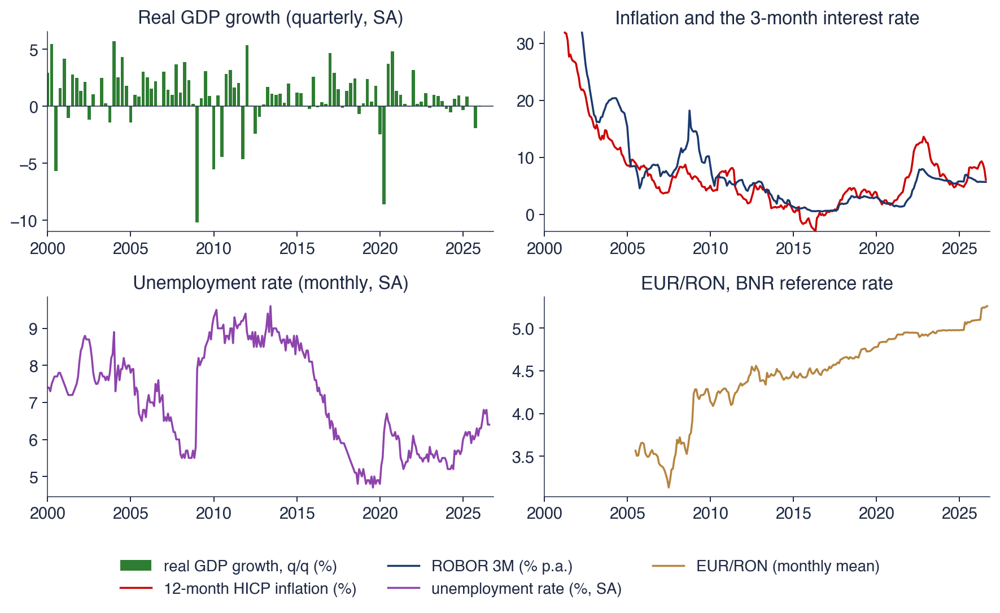
România: creșterea PIB-ului real față de trimestrul anterior și rata șomajului, ajustate sezonier (Eurostat); inflația anuală IAPC și ROBOR 3M (Eurostat); cursul de referință EUR/RON al BNR, media lunară.
Ce veți putea face
Scrieți un VAR(\(p\)) în formă matriceală și ecuație cu ecuație și numărați-i parametrii.
Verificați stabilitatea cu valorile proprii ale matricei companion și calculați media unui VAR stabil.
Estimați un VAR prin OLS, alegeți \(p\) cu AIC, BIC și HQ și testați reziduurile.
Testați cauzalitatea Granger și explicați ce nu demonstrează ea.
Calculați și interpretați răspunsurile la impuls ortogonalizate și descompunerea varianței erorii de prognoză și explicați de ce contează ordinea variabilelor.
Prognozați cu un VAR și comparați corect prognozele cu metode univariate de referință.
Planul capitolului
De la o serie la mai multeSerii de timp vectoriale, matrice de autocovarianță și funcția de corelație încrucișată pe date românești și de piață.
Modelul VAR(p)Modelul în formă matriceală și ecuație cu ecuație, un exemplu rezolvat, numărul de parametri și propunerea lui Sims.
Staționaritate și forma companionCondiția de stabilitate, media și varianța unui VAR stabil, matricea companion și reprezentarea de medie mobilă.
RezumatIdeile și formulele de reținut și întrebări de autoevaluare.
De la o serie la mai multe
Această secțiune introduce obiectele analizei seriilor de timp multivariate. Pornește de la patru serii macroeconomice românești și de la întrebările pe care le ridică, definește o serie de timp vectorială și matricele ei de autocovarianță și introduce funcția de corelație încrucișată, analogul multivariat al funcției de autocorelație. Două aplicații, una pe randamentele bursiere zilnice și una pe inflația și dobînzile din România, arată ce dezvăluie funcția de corelație încrucișată și unde încetează să mai fie informativă. Secțiunea se încheie cu argumentul pentru un singur model al tuturor seriilor.
România: patru serii macroeconomice care evoluează împreună
Graficul are patru panouri cu date românești. Panoul din stînga sus este creșterea produsului intern brut (PIB) real față de trimestrul anterior, ajustată sezonier, în procente. Panoul din dreapta sus arată două serii pe aceeași axă: rata anuală a inflației măsurate prin indicele armonizat al prețurilor de consum (IAPC), cu roșu, și ROBOR 3M, dobînda la trei luni la care băncile din România oferă depozite interbancare, cu albastru, în procente pe an. Panourile de jos arată rata șomajului ajustată sezonier și cursul de referință EUR/RON al Băncii Naționale a României (BNR), ca medie lunară.
Seriile provin de la Eurostat și de la BNR. Creșterea PIB-ului este un flux trimestrial, în timp ce inflația, dobînda, șomajul și cursul sînt lunare; în VAR-ul acestui capitol seriile lunare sînt mediate pe fiecare trimestru, astfel încît toate variabilele să se refere la aceleași perioade. VAR-ul principal folosește trei dintre serii, creșterea PIB-ului, inflația și ROBOR 3M, adică variabilele unui model mic standard al politicii monetare: activitatea economică, prețurile și dobînda legată de politica monetară.
Pe scurt
Creșterea PIB-ului real (față de trimestrul anterior) și rata șomajului, ajustate sezonier; inflația anuală IAPC; ROBOR 3M, dobînda la 3 luni; sursa: Eurostat; EUR/RON: cursul de referință BNR
Trăsătura cea mai vizibilă a panoului din dreapta sus este că inflația și ROBOR 3M cresc și scad împreună. Corelația lor în T1 2005 – T2 2026, calculată pe medii trimestriale, este 0,66. Inflația a atins maximul de 13,6% în noiembrie 2022, după șocul prețurilor energiei; ROBOR 3M a atins 18,2% în octombrie 2008, în criza de lichiditate din acea toamnă, cînd dobînzile interbancare au explodat fără o creștere corespunzătoare a inflației. O evoluție comună de acest fel este ceea ce trebuie să explice un model comun.
Creșterea PIB-ului se comportă altfel: oscilează în jurul unei medii mici și pozitive, cu două scăderi mari, −10,2% în T1 2009, în criza financiară globală, și −8,6% în T2 2020, în pandemie. Cele mai recente valori sînt o inflație de 6,1% în august 2026, ROBOR 3M la 5,69%, o rată a șomajului de 6,4% și un curs de 5,26 lei pentru un euro. Graficul ridică cele două întrebări ale capitolului: ajută inflația la prognoza dobînzii și cum reacționează ROBOR la o surpriză a inflației și cît timp? La prima răspunde cauzalitatea Granger, la a doua răspunsurile la impuls.
Pe scurt
Inflația și ROBOR 3M cresc și scad împreună: corelația este 0,66 în T1 2005–T2 2026 (medii trimestriale)
inflația a atins 13,6% în noiembrie 2022; ROBOR 3M a atins 18,2% în octombrie 2008 (criza de lichiditate din 2008)
Creșterea PIB-ului este zgomotoasă, cu două scăderi mari: \(-\)10,2% în T1 2009 și \(-\)8,6% în T2 2020
O serie de timp vectorială (vector time series) grupează \(K\) serii observate la aceleași date într-un vector coloană, \(\bY_t = (Y_{1t}, \dots, Y_{Kt})'\), unde \(Y_{jt}\) este valoarea seriei \(j\) la data \(t\), iar apostroful notează transpusa. În exemplul românesc, \(\bY_t = (g_t, \pi_t, i_t)'\) conține creșterea PIB-ului, inflația și ROBOR 3M din trimestrul \(t\), deci \(K = 3\). Vectorul mediilor este \(\boldsymbol{\mu} = E[\bY_t]\), de dimensiune \(K \times 1\), iar dependența în timp este descrisă de matricea de autocovarianță (autocovariance matrix) la lagul \(h\),\(\bGamma(h) = \Cov(\bY_t, \bY_{t-h}) = E[(\bY_t - \boldsymbol{\mu})(\bY_{t-h} - \boldsymbol{\mu})']\), o matrice \(K \times K\).
Diagonala lui \(\bGamma(h)\) conține autocovarianțele fiecărei serii la lagul \(h\), obiectele din Capitolul 1. Elementele din afara diagonalei sînt covarianțele încrucișate (cross-covariances) \(\gamma_{jk}(h) = \Cov(Y_{jt}, Y_{k,t-h})\), care măsoară legătura dintre seria \(j\) de azi și seria \(k\) de acum \(h\) perioade. Seria vectorială este slab staționară cînd \(\boldsymbol{\mu}\) și \(\bGamma(h)\) nu depind de \(t\), extensia directă a definiției univariate.
Spre deosebire de o autocovarianță univariată, \(\bGamma(h)\) nu este simetrică: \(\gamma_{12}(h)\) leagă \(Y_1\) de azi de \(Y_2\) din trecut, iar \(\gamma_{21}(h)\) leagă \(Y_2\) de azi de \(Y_1\) din trecut, iar cele două pot diferi. Singura simetrie este \(\bGamma(-h) = \bGamma(h)'\). Această asimetrie face posibile întrebările despre precedență: „\(Y_1\) precedă \(Y_2\)” și „\(Y_2\) precedă \(Y_1\)” sînt afirmații diferite, iar datele o pot susține pe una fără cealaltă.
Pe scurt
Definiție: \(\bY_t = (Y_{1t}, \dots, Y_{Kt})'\) grupează \(K\) serii observate la aceleași date
exemplu: \(\bY_t = (g_t, \pi_t, i_t)'\), creșterea PIB-ului, inflația și ROBOR 3M din trimestrul \(t\); \(K = 3\)
\(Y_{jt}\): valoarea seriei \(j\) la data \(t\); apostroful \('\) notează transpusa (un vector coloană)
Vectorul mediilor: \(\boldsymbol{\mu} = E[\bY_t]\), de dimensiune \(K \times 1\)
matricea de autocovarianță la lagul \(h\): \(\bGamma(h) = \Cov(\bY_t, \bY_{t-h}) = E[(\bY_t - \boldsymbol{\mu})(\bY_{t-h} - \boldsymbol{\mu})']\), \(K \times K\)
diagonala: autocovarianțele fiecărei serii (Capitolul 1); în afara diagonalei: covarianțele încrucișate\(\gamma_{jk}(h) = \Cov(Y_{jt}, Y_{k,t-h})\)
Staționaritate slabă: \(\boldsymbol{\mu}\) și \(\bGamma(h)\) nu depind de \(t\)
\(\bGamma(h)\) nu este simetrică, dar \(\bGamma(-h) = \bGamma(h)'\): „\(Y_1\) precedă \(Y_2\)” și „\(Y_2\) precedă \(Y_1\)” sînt afirmații diferite
unde \(\gamma_{yx}(k) = \Cov(y_t, x_{t-k})\) este covarianța încrucișată, iar \(\sigma_y\),\(\sigma_x\) sînt abaterile standard ale celor două serii. Un lag pozitiv \(k\) asociază \(y\) de azi cu un \(x\) anterior, deci un \(\rho_{yx}(k)\) mare pentru \(k > 0\) arată că \(x\) precedă pe \(y\); o valoare mare pentru \(k < 0\) arată că \(y\) precedă pe \(x\). Versiunea de eșantion \(\hat\rho_{yx}(k)\) este corelația perechilor \((y_t, x_{t-k})\) din date.
Dacă cele două serii sînt zgomote albe independente, \(\hat\rho_{yx}(k)\) are aproximativ distribuția Normală cu media 0 și varianța \(1/T\), unde \(T\) este numărul de observații, de unde benzile de referință \(\pm 1{,}96/\sqrt{T}\). Benzile sînt valide doar în această ipoteză. Cînd ambele serii sînt autocorelate, corelațiile încrucișate de eșantion variază mult mai mult decît sugerează \(1/\sqrt{T}\), iar valori în afara benzilor apar chiar dacă seriile sînt independente. Este același mecanism ca în regresia falsă (spurious regression) din Capitolul 3: persistența umflă relațiile aparente.
CCF privește o pereche de serii și un lag pe rînd. Ea nu poate separa informația pe care o aduce \(x_{t-1}\) despre \(y_t\) de informația conținută deja în \(y_{t-1}\) și nici nu poate ține seama de o a treia variabilă. Un VAR privește împreună toate variabilele și toate lagurile, de aceea îi ia locul atunci cînd întrebările devin precise.
funcția de corelație încrucișată (CCF): \(k > 0\): \(x\) din trecut cu \(y\) de azi (\(x\) precedă); \(k < 0\): \(y\) precedă
\(\gamma_{yx}(k) = \Cov(y_t, x_{t-k})\): covarianța încrucișată; \(\sigma_y\), \(\sigma_x\): abaterile standard ale celor două serii
Versiunea de eșantion: \(\hat\rho_{yx}(k)\), corelația perechilor \((y_t, x_{t-k})\)
dacă cele două serii sînt zgomote albe independente, \(\hat\rho_{yx}(k) \approx N(0, 1/T)\), unde \(T\) este numărul de observații: benzile \(\pm 1{,}96/\sqrt{T}\)
pentru serii autocorelate benzile sînt prea înguste: apar relații false de precedență (comparați cu Capitolul 3, regresia falsă)
CCF privește o pereche și un lag pe rînd; un VAR privește împreună toate variabilele și toate lagurile
Corelații încrucișate: piețe și date macroeconomice românești
Panoul din stînga folosește randamentele logaritmice zilnice din 2000 pînă în 2026, pe cele 6.433 de zile în care s-a tranzacționat la toate cele trei burse. Fiecare pereche de bare arată \(\Corr(\text{DAX}_t, \text{S\&P}_{t-k})\), cu turcoaz, și \(\Corr(\text{BET}_t, \text{S\&P}_{t-k})\), cu roșu, pentru lagurile \(k\) de la −5 la 5 zile; liniile punctate sînt benzile \(\pm 1{,}96/\sqrt{T}\). Barele de la \(k\) pozitiv asociază randamentul european de azi cu un randament S&P 500 anterior.
Panoul din dreapta asociază ROBOR 3M trimestrial cu lagurile inflației, \(\Corr(\text{ROBOR}_t, \pi_{t-k})\), pentru \(k\) de la −8 la 8 trimestre. Aici nu există benzi, deoarece ambele serii sînt persistente, iar benzile pentru zgomot alb ar induce în eroare. Cele două panouri contrastează două situații: randamente aproape fără memorie proprie, pentru care CCF se citește ușor, și niveluri macroeconomice persistente, pentru care nu se citește ușor.
Pe scurt
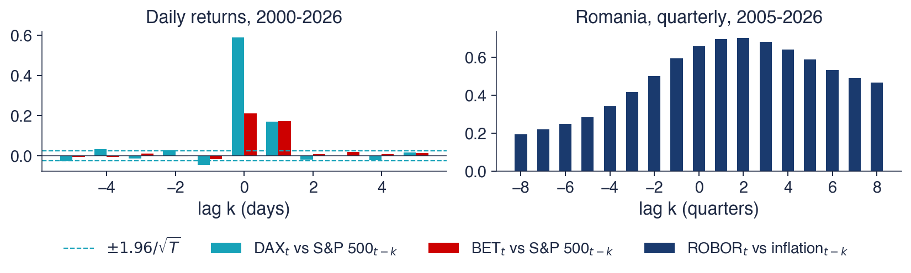
Stînga: randamente logaritmice zilnice (EODHD), 6 433 de zile comune de tranzacționare, 2000–2026; bare: \(\Corr(\text{DAX}_t, \text{S\&P}_{t-k})\) și \(\Corr(\text{BET}_t, \text{S\&P}_{t-k})\). Dreapta: ROBOR 3M trimestrial față de lagurile inflației
Pentru BET, corelația cu S&P 500 este 0,21 în aceeași zi și 0,17 cu randamentul S&P 500 din ziua precedentă (\(k = 1\)); în sens invers, la \(k = -1\), este −0,02. Banda este ±0,024, deci valoarea de la lagul 1 este mult în afara ei, iar valoarea inversă este în interior. Pentru DAX, corelația din aceeași zi este 0,59, iar cea de la lagul 1 este 0,17; valoarea inversă, −0,05, este mică și negativă. Randamentul de ieri de la New York se vede în randamentele de azi de la Frankfurt și București, mult mai puternic decît invers.
Motivul este ceasul. Wall Street se închide la ora 22:00, ora Frankfurtului, la cîteva ore după bursele europene. O parte din ce se întîmplă la New York în ziua \(t-1\) se petrece cînd Europa este deja închisă, iar prețurile europene o încorporează abia la deschiderea din ziua \(t\). Precedența S&P 500 este deci o consecință a orelor de tranzacționare nesincrone, idee care revine la testele Granger.
Pentru ROBOR și inflație, cea mai mare corelație, 0,70, apare la \(k = 2\) trimestre, ceea ce sugerează că inflația precedă dobînda cu aproximativ o jumătate de an. Totuși, toate valorile sînt mari: 0,34 la \(k = -4\) și 0,64 la \(k = 4\). Ambele serii sînt persistente, deci orice lag al uneia este corelat cu orice valoare apropiată a celeilalte. CCF singură nu poate separa precedența de persistență; pentru aceasta trebuie controlat trecutul lui ROBOR însuși, ceea ce face exact un VAR.
Pe scurt
BET cu S&P 500: 0,21 în aceeași zi și 0,17 cu ziua precedentă (\(k = 1\)); pentru \(k = -1\): \(-\)0,02
banda este \(\pm\)0,024: randamentul de ieri de la New York se vede în randamentele de azi de la București și Frankfurt, nu invers
motivul: Wall Street se închide la ora 22:00 (ora Frankfurtului), după piețele europene; știrile ajung la ele a doua zi dimineață
ROBOR cu inflația: cea mai mare corelație, 0,70, apare la \(k = 2\) trimestre (inflația precedă)
dar toate valorile sînt mari (0,34 la \(k = -4\), 0,64 la \(k = 4\)): două serii persistente; CCF singură nu poate separa precedența de persistență
Modelele univariate din Capitolele 2–3 prognozează fiecare serie din propriul trecut. Ele ignoră posibilitatea ca inflația din trimestrul trecut să ajute la prognoza dobînzii din acest trimestru, deși corelațiile încrucișate sugerează că ajută. Dacă o astfel de informație există, un model care o folosește poate prognoza mai bine și poate descrie cum se influențează variabilele între ele.
Nici o singură regresie nu este soluția. O regresie a lui \(\pi_t\) pe \(i_t\) tratează dobînda ca dată, adică exogenă (exogenous), determinată în afara modelului. Cu feedback, banca centrală reacționează la inflație, iar inflația reacționează la dobîndă, deci ambele variabile sînt endogene (endogenous): sînt determinate împreună în interiorul sistemului, iar coeficientul regresiei amestecă cele două sensuri ale influenței.
Un VAR tratează simetric toate variabilele: fiecare depinde de trecutul tuturor celorlalte și niciuna nu este declarată exogenă dinainte. Scrierea lui nu cere teorie economică dincolo de alegerea variabilelor. Teoria revine cînd interpretăm șocurile, în secțiunea despre răspunsurile la impuls, pentru că a numi o mișcare a lui ROBOR „șoc de politică monetară” cere ipoteze pe care datele singure nu le pot furniza.
Pe scurt
Modelele univariate (Capitolele 2–3) prognozează fiecare serie din propriul trecut
ele ignoră faptul că inflația din trimestrul trecut poate ajuta la prognoza dobînzii din acest trimestru
Feedback: banca centrală reacționează la inflație, inflația reacționează la dobîndă
o singură regresie a lui \(\pi_t\) pe \(i_t\) tratează \(i_t\) ca fiind dat (exogen); aici ambele sînt endogene, determinate în interiorul sistemului
Un VAR tratează simetric toate variabilele: fiecare depinde de trecutul tuturor
nu este nevoie de teorie economică pentru a-l scrie; teoria revine cînd interpretăm șocurile (secțiunea 7)
O serie vectorială \(\bY_t\) are un vector al mediilor și matrice de autocovarianță \(\bGamma(h)\), ale căror elemente din afara diagonalei sînt covarianțe încrucișate. Aceste matrice nu sînt simetrice, iar \(\bGamma(-h) = \bGamma(h)'\); această asimetrie permite ca o serie să o preceadă pe alta. Funcția de corelație încrucișată \(\rho_{yx}(k)\) măsoară astfel de precedențe pentru o pereche și un lag pe rînd, iar \(k > 0\) înseamnă că \(x\) precedă.
Pe date zilnice, S&P 500 precedă cu o zi DAX și BET, din cauza orelor de închidere. Pe datele trimestriale românești, inflația și ROBOR sînt puternic corelate la toate lagurile, deci CCF nu poate deosebi precedența de persistență. Feedback-ul dintre variabile cere un model comun, VAR-ul.
Pe scurt
O serie vectorială \(\bY_t\) are un vector al mediilor și matrice de autocovarianță \(\bGamma(h)\), cu \(\bGamma(-h) = \bGamma(h)'\)
CCF \(\rho_{yx}(k)\) arată relațiile de precedență; \(k > 0\): \(x\) precedă
Randamentele S&P 500 precedă cu o zi randamentele DAX și BET
Feedback-ul dintre variabile cere un model comun
Sinteza secțiunii
Mai multe serii observate împreună conțin informație pe care niciun model univariat nu o folosește: trecutul unei serii poate ajuta la prognoza alteia, iar șocurile se pot transmite de la o variabilă la alta. Funcția de corelație încrucișată detectează astfel de legături pe date simple, dar eșuează cînd seriile sînt persistente și cînd interacționează mai mult de două variabile. Secțiunea următoare introduce modelul care tratează deodată toate variabilele și toate lagurile.
Modelul VAR\((p)\)
Această secțiune definește modelul vector autoregresiv de ordinul \(p\) și arată cum se citește, întîi în formă matriceală și apoi ecuație cu ecuație. Un exemplu cu două variabile este rezolvat de mînă și apoi simulat, iar secțiunea numără parametrii pe care un VAR trebuie să-i estimeze, ceea ce explică de ce VAR-urile se păstrează mici. Se încheie cu argumentul istoric al lui Sims (1980), care a făcut din VAR instrumentul standard al macroeconomiei empirice.
unde \(\bc\) este un vector \(K \times 1\) al termenilor liberi, \(\bA_1, \dots, \bA_p\) sînt matrice de coeficienți \(K \times K\), iar \(\bepsilon_t\) este zgomot alb vectorial: \(E[\bepsilon_t] = \mathbf{0}\),\(E[\bepsilon_t\bepsilon_t'] = \bSigma\) și \(E[\bepsilon_t\bepsilon_s'] = \mathbf{0}\) pentru \(t \ne s\). Fiecare rînd din (6.2) este o regresie a unei variabile pe o constantă și pe \(p\) laguri ale fiecărei variabile.
Matricea de covarianță \(\bSigma\) nu este, în general, diagonală: șocurile din ecuații diferite sînt corelate la aceeași dată. În VAR-ul românesc, un trimestru cu o creștere neașteptată a inflației tinde să fie și un trimestru cu o creștere neașteptată a lui ROBOR. Șocurile de la date diferite sînt, în schimb, necorelate; toată dinamica, felul în care trecutul influențează prezentul, se află în matricele \(\bA_j\).
Pentru \(K = 1\),(6.2) este modelul AR(\(p\)) din Capitolul 2. Forma (6.2) se numește forma redusă (reduced form): descrie comportamentul comun al datelor, prognozele și erorile de prognoză, dar șocurile ei \(\bepsilon_t\) nu sînt șocuri economice, cum ar fi o decizie de politică monetară. Secțiunea despre VAR-urile structurale arată ce trebuie adăugat pentru a da șocurilor un sens economic.
Cu două variabile și un lag, ecuația matriceală conține o matrice \(\bA\) de \(2 \times 2\), cu elementele \(a_{11}, a_{12}, a_{21}, a_{22}\). Efectuînd înmulțirea obținem două regresii obișnuite: \(y_{1t} = c_1 + a_{11}y_{1,t-1} + a_{12}y_{2,t-1} + \varepsilon_{1t}\) și \(y_{2t} = c_2 + a_{21}y_{1,t-1} + a_{22}y_{2,t-1} + \varepsilon_{2t}\). Cele două ecuații au aceiași regresori, valorile întîrziate ale ambelor variabile, dar coeficienți diferiți și șocuri diferite.
Indicii urmează o regulă fixă: \(a_{jk}\) este efectul lui \(y_{k,t-1}\) asupra lui \(y_{jt}\), deci rîndul dă ecuația, iar coloana regresorul. Elementele diagonale \(a_{11}\) și \(a_{22}\) măsoară cît depinde fiecare variabilă de propriul trecut, ca într-un AR(1). Elementele din afara diagonalei poartă interacțiunea. Dacă \(a_{12} = a_{21} = 0\), VAR-ul se desface în două modele AR(1) separate (legate doar prin corelația șocurilor); dacă \(a_{12} \ne 0\), trecutul lui \(y_2\) ajută la prognoza lui \(y_1\), proprietatea pe care o examinează testul Granger.
Exemplul are \(\bc = (1{,}2;\ 0{,}6)'\), matricea \(\bA\) cu rîndurile \((0{,}5;\ 0{,}2)\) și \((0{,}3;\ 0{,}4)\) și o matrice de covarianță a șocurilor \(\bSigma\) cu varianțele 1 și covarianța 0,5. Ecuație cu ecuație, \(y_{1t} = 1{,}2 + 0{,}5y_{1,t-1} + 0{,}2y_{2,t-1} + \varepsilon_{1t}\) și \(y_{2t} = 0{,}6 + 0{,}3y_{1,t-1} + 0{,}4y_{2,t-1} + \varepsilon_{2t}\). Coeficientul \(a_{21} = 0{,}3\) spune că o unitate în plus a lui \(y_1\) în perioada trecută crește \(y_2\) cu 0,3 azi, trecutul propriu al lui \(y_2\) fiind fixat. Cum varianțele sînt 1, covarianța 0,5 este și corelația celor două șocuri.
Prognoza pentru perioada următoare înlocuiește șocul viitor cu media lui, zero. Din \(\bY_T = (5;\ 2)'\),\(\hat\bY_{T+1} = \bc + \bA\bY_T\): pentru \(y_1\),\(1{,}2 + 0{,}5 \cdot 5 + 0{,}2 \cdot 2 = 4{,}10\); pentru \(y_2\),\(0{,}6 + 0{,}3 \cdot 5 + 0{,}4 \cdot 2 = 2{,}90\). Prognoza la doi pași aplică aceeași regulă prognozei la un pas, \(\hat\bY_{T+2} = \bc + \bA\hat\bY_{T+1} = (3{,}83;\ 2{,}99)'\).
Prognozele se deplasează de la valorile inițiale spre media procesului, \(\boldsymbol{\mu} = (3{,}50;\ 2{,}75)'\), calculată în secțiunea următoare. \(y_1\) pornește deasupra mediei și coboară spre ea; \(y_2\) pornește dedesubt și urcă. Ambele mișcări sînt versiunea multivariată a revenirii la medie a unui AR(1) staționar.
Panoul din stînga arată 200 de perioade simulate din VAR(1) din exemplul rezolvat, cu \(y_{1t}\) în albastru închis, \(y_{2t}\) în roșu și cele două medii ca linii orizontale punctate. Panoul din dreapta arată răspunsurile la impuls ale modelului: traiectoriile lui \(y_1\) și \(y_2\) după un șoc unitar în \(\varepsilon_1\) la orizontul \(h = 0\), cu toate celelalte șocuri egale cu zero. Aceste traiectorii sînt prima coloană a matricei \(\bA^h\), pentru \(h = 0, \dots, 10\).
La \(h = 0\) șocul mișcă doar \(y_1\), cu 1, iar \(y_2\) este la 0; la \(h = 1\),\(y_1\) este la \(a_{11} = 0{,}5\), iar \(y_2\) la \(a_{21} = 0{,}3\). După aceea, ambele răspunsuri scad împreună spre zero. Panoul din dreapta ignoră corelația dintre șocuri: arată ce face un șoc doar în \(\varepsilon_1\), întrebare reluată în secțiunea despre răspunsurile la impuls.
Pe scurt
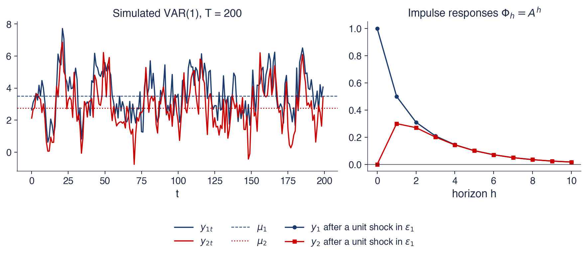
Stînga: 200 de perioade din modelul VAR(1) de pe slide-ul anterior, cu cele două medii; dreapta: răspunsurile lui \(y_1\) și \(y_2\) la un șoc unitar în \(\varepsilon_1\) la \(h = 0\), coloanele lui \(\bA^h\)
Cele două serii simulate oscilează în jurul mediilor și evoluează împreună: corelația lor de eșantion este 0,75. Această evoluție comună are două surse. Șocurile sînt corelate, cu corelația 0,5, deci cele două serii sînt împinse în același sens în aceeași perioadă. Efectele încrucișate \(a_{12} = 0{,}2\) și \(a_{21} = 0{,}3\) transmit apoi fiecare mișcare de la o serie la cealaltă în perioada următoare, ceea ce ridică corelația peste cea a șocurilor.
Un șoc unitar în \(y_1\) ajunge la \(y_2\) după o perioadă, prin \(a_{21} = 0{,}3\), apoi ambele răspunsuri se sting. Viteza de stingere este guvernată de cea mai mare valoare proprie a lui \(\bA\), 0,7: după cîteva perioade, fiecare răspuns se micșorează cu un factor de aproximativ 0,7 pe perioadă. La cinci perioade după șoc, răspunsul lui \(y_1\) este 0,10, iar cel al lui \(y_2\) este tot 0,10. A doua valoare proprie, 0,2, contează doar în primele perioade, deoarece \(0{,}2^h\) dispare repede.
Pe scurt
Cele două serii oscilează în jurul mediilor și evoluează împreună: corelația de eșantion este 0,75
două surse ale evoluției comune: șocurile corelate (\(\Corr = 0{,}5\)) și efectele încrucișate \(a_{12}\), \(a_{21}\)
Un șoc unitar în \(y_1\) ajunge la \(y_2\) după o perioadă (\(a_{21} = 0{,}3\)), apoi ambele se sting
stingerea este guvernată de cea mai mare valoare proprie a lui \(\bA\), 0,7: după 5 perioade rămîne circa \(0{,}7^5 \approx 0{,}17\) din efect
Un VAR(\(p\)) cu \(K\) variabile și termen liber are \(K\) termeni liberi și \(p\) matrice de cîte \(K^2\) coeficienți, în total \(K + pK^2\) coeficienți, plus \(K(K+1)/2\) elemente distincte ale lui \(\bSigma\). Fiecare ecuație are \(1 + pK\) regresori. VAR-ul românesc cu \(K = 3\) și \(p = 2\) are \(3 + 2 \cdot 9 = 21\) de coeficienți, estimați pe 84 de trimestre, deci fiecare ecuație estimează 7 coeficienți din 84 de observații.
Numărul crește cu pătratul lui \(K\), blestemul dimensionalității (curse of dimensionality) al modelelor VAR. Cu \(K = 5\) și \(p = 4\), modelul are \(5 + 4 \cdot 25 = 105\) coeficienți. Cu 25 de ani de date trimestriale, adică 100 de observații, fiecare ecuație are 21 de regresori și 79 de grade de libertate reziduale: estimarea este posibilă, dar imprecisă, iar prognozele suferă din cauza erorii de estimare.
De aceea VAR-urile din practică sînt mici, cu 3–6 variabile și puține laguri, iar coeficienții lor individuali au erori standard mari. Ei se interpretează rar unul cîte unul. Modelul este rezumat în schimb prin teste comune, răspunsuri la impuls și prognoze, care combină mulți coeficienți într-o singură afirmație despre sistem.
Pe scurt
Un VAR\((p)\) cu \(K\) variabile și termen liber: \(K + pK^2\) coeficienți, plus \(K(K+1)/2\) în \(\bSigma\)
fiecare ecuație are \(1 + pK\) regresori
VAR-ul românesc: \(K = 3\), \(p = 2\): \(3 + 2 \cdot 9 = 21\) de coeficienți estimați pe 84 de trimestre
În anii 1970, prognoza macroeconomică se baza pe sisteme mari de ecuații, construite fiecare pe baza teoriei economice. Sims (1980) a argumentat că restricțiile impuse de aceste modele pentru a-și identifica ecuațiile erau „incredibile”: deciziile despre ce variabile sînt exogene și ce laguri au coeficienți nuli erau luate fără dovezi, iar așteptările făceau multe dintre ele de nesusținut. Propunerea lui a fost să se pornească de la un VAR nerestricționat, în care fiecare variabilă depinde de trecutul fiecărei variabile, și să se adauge doar ipotezele minime necesare pentru interpretarea șocurilor.
VAR-ul a devenit instrumentul standard al băncilor centrale pentru prognoză și pentru măsurarea efectelor politicii monetare. În 2011, Christopher Sims a primit Premiul Nobel pentru economie, împreună cu Thomas Sargent, „pentru cercetarea empirică a cauzei și efectului în macroeconomie”. Fotografia îl arată pe Sims în 2011.
Un VAR(\(p\)) scrie fiecare variabilă ca funcție liniară de o constantă și de \(p\) laguri ale tuturor variabilelor, plus un șoc de tip zgomot alb vectorial cu covarianța \(\bSigma\). Coeficientul \(a_{jk}\) este efectul lagului variabilei \(k\) în ecuația variabilei \(j\), iar \(\bSigma\) surprinde corelația șocurilor din aceeași perioadă.
Modelul are \(K + pK^2\) coeficienți, de aceea \(K\) și \(p\) se păstrează mici. Sims (1980) a propus VAR-ul ca alternativă la restricțiile „incredibile” ale marilor modele din vremea lui, iar el rămîne modelul de referință pentru dinamica comună a cîtorva serii.
\(a_{jk}\): efectul lagului variabilei \(k\) în ecuația variabilei \(j\)
\(K + pK^2\) coeficienți: păstrăm \(K\) și \(p\) mici
Sims (1980): VAR-ul ca alternativă la restricțiile „incredibile”
Sinteza secțiunii
VAR(\(p\)) extinde modelul autoregresiv de la o serie la mai multe: aceiași regresori întîrziați apar în fiecare ecuație, iar coeficienții din afara diagonalei poartă interacțiunea dintre variabile. Exemplul rezolvat a arătat cum se calculează prognozele și cum se stinge un șoc; numărul de parametri a arătat de ce modelul trebuie să rămînă mic. Secțiunea următoare dă condiția în care șocurile se sting.
Staționaritate și forma companion
Un VAR este util pentru prognoză și pentru răspunsuri la impuls doar dacă efectul șocurilor trecute se estompează. Această secțiune deduce condiția pentru aceasta, condiția de stabilitate, întîi pentru un VAR(1) și apoi, prin forma companion, pentru un VAR(\(p\)). Calculează media și varianța unui VAR stabil, aplică condiția la trei VAR-uri estimate și scrie un VAR stabil ca medie mobilă a șocurilor trecute, reprezentarea din spatele răspunsurilor la impuls și al erorilor de prognoză.
Substituind repetat VAR(1) \(\bY_t = \bc + \bA\bY_{t-1} + \bepsilon_t\) în el însuși de \(h\) ori, obținem \(\bY_t = \bc + \bA\bc + \dots + \bA^{h-1}\bc + \bA^h\bY_{t-h} + \sum_{j=0}^{h-1}\bA^j\bepsilon_{t-j}\). Valoarea de acum \(h\) perioade intră prin \(\bA^h\bY_{t-h}\), iar un șoc de acum \(j\) perioade prin \(\bA^j\bepsilon_{t-j}\). Trecutul este uitat, iar șocurile vechi își pierd influența, doar dacă \(\bA^h \to \mathbf{0}\) cînd \(h\) crește.
Aceasta se întîmplă exact atunci cînd toate valorile proprii (eigenvalues) \(\lambda\) ale lui \(\bA\) satisfac \(|\lambda| < 1\), condiția de stabilitate. Valorile proprii sînt rădăcinile ecuației \(\det(\bA - \lambda\mathbf{I}) = 0\), unde \(\mathbf{I}\) este matricea identitate; pentru \(K = 2\) aceasta este ecuația de gradul doi \(\lambda^2 - \mathrm{tr}(\bA)\lambda + \det(\bA) = 0\), cu urma \(\mathrm{tr}(\bA) = a_{11} + a_{22}\) și determinantul \(\det(\bA) = a_{11}a_{22} - a_{12}a_{21}\). Valorile proprii pot fi complexe, de aceea \(|\lambda|\) este modulul. Un VAR stabil care a pornit demult este slab staționar; condiția este versiunea multivariată a condiției \(|\phi| < 1\) pentru AR(1) din Capitolul 2.
Pentru exemplul rezolvat, \(\mathrm{tr}(\bA) = 0{,}5 + 0{,}4 = 0{,}9\) și \(\det(\bA) = 0{,}5 \cdot 0{,}4 - 0{,}2 \cdot 0{,}3 = 0{,}14\), deci \(\lambda^2 - 0{,}9\lambda + 0{,}14 = 0\). Discriminantul este \(0{,}81 - 0{,}56 = 0{,}25\), deci \(\lambda = (0{,}9 \pm 0{,}5)/2\), adică \(\lambda_1 = 0{,}7\) și \(\lambda_2 = 0{,}2\). Ambele se află în interiorul cercului unitate, iar VAR-ul este stabil.
Pentru un VAR(1) staționar, media este aceeași la fiecare dată. Aplicînd media ambilor membri ai modelului obținem \(\boldsymbol{\mu} = \bc + \bA\boldsymbol{\mu}\), deoarece \(E[\bepsilon_t] = \mathbf{0}\), iar rezolvînd,
În exemplu, \(\mathbf{I} - \bA\) are rîndurile \((0{,}5;\ -0{,}2)\) și \((-0{,}3;\ 0{,}6)\) și determinantul \(0{,}5 \cdot 0{,}6 - 0{,}2 \cdot 0{,}3 = 0{,}24\). Inversa ei este \(1/0{,}24\) înmulțit cu matricea cu rîndurile \((0{,}6;\ 0{,}2)\) și \((0{,}3;\ 0{,}5)\), iar înmulțind cu \(\bc = (1{,}2;\ 0{,}6)'\) obținem \(\boldsymbol{\mu} = (3{,}50;\ 2{,}75)'\). Acestea sînt nivelurile spre care s-au îndreptat prognozele din exemplul rezolvat.
Matricea de varianță \(\bGamma(0)\) satisface \(\bGamma(0) = \bA\bGamma(0)\bA' + \bSigma\), o ecuație Lyapunov discretă: varianța de azi este varianța transmisă de ieri plus varianța șocului nou. Autocovarianțele la laguri urmează din \(\bGamma(h) = \bA^h\bGamma(0)\). Ecuația se rezolvă așezînd coloanele unei matrice una sub alta într-un singur vector, operația \(\mathrm{vec}\), și folosind produsul Kronecker \(\otimes\):\(\mathrm{vec}\,\bGamma(0) = (\mathbf{I} - \bA \otimes \bA)^{-1}\mathrm{vec}\,\bSigma\).
În exemplu, \(\bGamma(0)\) are varianțele 1,75 și 1,73 și covarianța 1,22. Ambele varianțe depășesc varianța șocurilor, 1, deoarece dinamica acumulează șocurile trecute: valoarea de azi conține șocul de azi și efectele, în scădere, ale tuturor șocurilor anterioare. Corelația implicată a celor două serii, \(1{,}22/\sqrt{1{,}75 \cdot 1{,}73} \approx 0{,}70\), este mai mare decît corelația șocurilor, 0,5, mecanismul efectelor încrucișate văzut în simulare.
Pe scurt
Media: luăm speranța matematică în ambii membri, \(\boldsymbol{\mu} = \bc + \bA\boldsymbol{\mu}\), deci \(\boldsymbol{\mu} = (\mathbf{I} - \bA)^{-1}\bc\)
Un VAR(\(p\)) poate fi rescris ca VAR(1) grupînd \(p\) vectori consecutivi într-unul singur, \(\boldsymbol{\xi}_t = (\bY_t', \bY_{t-1}', \dots, \bY_{t-p+1}')'\), de dimensiune \(Kp\). Atunci \(\boldsymbol{\xi}_t = \boldsymbol{\nu} + \mathbf{F}\boldsymbol{\xi}_{t-1} + \mathbf{v}_t\), unde \(\boldsymbol{\nu}\) este \(\bc\) urmat de zerouri, \(\mathbf{v}_t\) este \(\bepsilon_t\) urmat de zerouri, iar \(\mathbf{F}\) este matricea companion (companion matrix), de dimensiune \(Kp \times Kp\). Pentru \(p = 2\):
Primul bloc de rînduri este VAR(2) însuși; al doilea bloc este identitatea \(\bY_{t-1} = \bY_{t-1}\), care transportă lagul mai departe.
Tot ce s-a arătat pentru VAR(1) se aplică acum lui \(\boldsymbol{\xi}_t\). Un VAR(\(p\)) este stabil cînd toate cele \(Kp\) valori proprii ale lui \(\mathbf{F}\) au modulul sub 1. Echivalent, toate rădăcinile \(z\) ale ecuației \(\det(\mathbf{I}_K - \bA_1z - \dots - \bA_pz^p) = 0\), în general numere complexe, se află în afara cercului unitate; valorile proprii ale lui \(\mathbf{F}\) sînt inversele acestor rădăcini.
Matricea companion este necesară pentru că valorile proprii ale lui \(\bA_1\) singure nu spun nimic despre stabilitatea unui VAR(2). Al doilea lag poate face un sistem exploziv chiar cînd \(\bA_1\) este mică, sau stabil cînd \(\bA_1\) singură ar sugera contrariul, așa cum a arătat deja modelul AR(2) univariat în Capitolul 2.
atunci \(\boldsymbol{\xi}_t = \boldsymbol{\nu} + \mathbf{F}\boldsymbol{\xi}_{t-1} + \mathbf{v}_t\): orice VAR\((p)\) este un VAR(1) în \(\boldsymbol{\xi}_t\)
\(\boldsymbol{\nu}\): \(\bc\) urmat de zerouri; \(\mathbf{v}_t\): \(\bepsilon_t\) urmat de zerouri; \(\mathbf{F}\): matricea companion, \(Kp \times Kp\)
al doilea bloc de rînduri este identitatea \(\bY_{t-1} = \bY_{t-1}\)
Stabilitatea unui VAR\((p)\): toate cele \(Kp\) valori proprii ale matricei companion \(\mathbf{F}\) au modulul sub 1
echivalent: toate rădăcinile \(z\) (numere complexe) ale ecuației \(\det(\mathbf{I}_K - \bA_1z - \dots - \bA_pz^p) = 0\) sînt în afara cercului unitate
valorile proprii ale lui \(\bA_1\) singure nu spun nimic despre stabilitatea unui VAR(2)
Graficul reprezintă în planul complex valorile proprii ale matricelor companion a trei VAR-uri estimate, cu cercul unitate ca reper. Axa orizontală este partea reală, iar axa verticală partea imaginară a fiecărei valori proprii. Cercurile roșii sînt cele 6 valori proprii ale VAR(2) românesc în creșterea PIB-ului, inflație și ROBOR 3M (\(K = 3\),\(p = 2\)). Pătratele albastre sînt cele 12 valori proprii ale VAR(4) american din studiul de caz Stock–Watson, iar triunghiurile verzi cele 12 valori proprii ale unui VAR(4) zilnic pentru randamentele S&P 500, DAX și BET.
Valorile proprii complexe apar în perechi conjugate, simetrice față de axa orizontală. Un punct apropiat de cerc aparține unei componente a dinamicii care se stinge lent; un punct apropiat de origine aparține unei componente care dispare aproape imediat.
Pe scurt
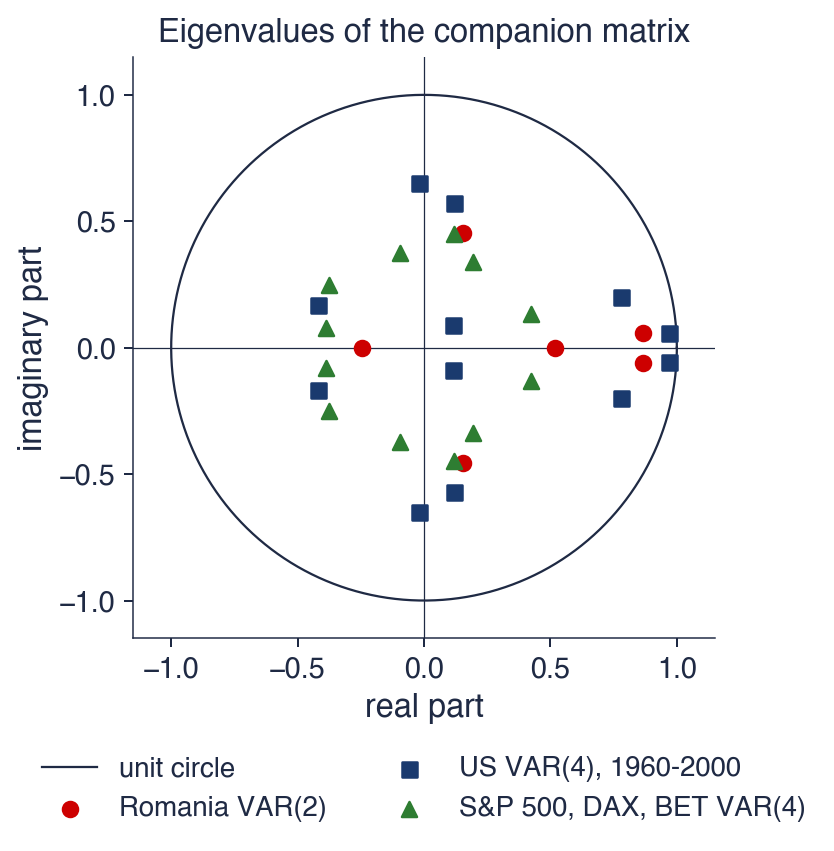
Matricele companion: VAR(2) românesc (creșterea PIB-ului, inflația, ROBOR 3M; 6 valori proprii), VAR(4) american din secțiunea 10 (12), VAR(4) zilnic pentru S&P 500, DAX și BET (12)
Toate cele trei VAR-uri sînt stabile: toate valorile lor proprii se află în interiorul cercului unitate. Cele mai mari module sînt 0,869 pentru România, 0,969 pentru Statele Unite și 0,464 pentru piețe. Cel mai mare modul stabilește viteza cu care șocurile se sting în cele din urmă: în VAR-ul american, \(0{,}97^{20} \approx 0{,}54\), deci după 20 de trimestre aproximativ jumătate din componenta cea mai lentă a unui șoc este încă prezentă; în VAR-ul piețelor, \(0{,}46^2 \approx 0{,}21\), deci după două zile rămîne doar o cincime.
VAR-urile macroeconomice au valori proprii apropiate de 1, deoarece inflația și dobînzile sînt persistente; VAR-ul randamentelor zilnice are valori proprii mici, deoarece randamentele aproape nu au memorie. Perechile complexe, cum sînt cele ale VAR-ului american aflate departe de axa reală, produc oscilații amortizate în răspunsurile la impuls: un răspuns care trece de zero înainte să se stabilizeze.
O valoare proprie foarte apropiată de 1 semnalează o posibilă rădăcină unitară (unit root), iar stabilitatea VAR-ului estimat poate ascunde atunci un sistem nestaționar. Dacă mai multe variabile au în comun o rădăcină unitară și evoluează împreună pe termen lung, ele sînt cointegrate, iar modelul potrivit este modelul vectorial cu corecția erorii din Capitolul 7.
Pe scurt
Toate cele trei VAR-uri sînt stabile; cele mai mari module: România 0,869, SUA 0,969, piețe 0,464
cel mai mare modul stabilește viteza cu care se sting șocurile: \(0{,}97^{20} \approx 0{,}54\) după 20 de trimestre, \(0{,}46^{2} \approx 0{,}21\) după 2 zile
VAR-urile macroeconomice au valori proprii apropiate de 1 (inflație și dobînzi persistente); VAR-urile de randamente au valori mici
perechile complexe produc oscilații amortizate în răspunsuri
O valoare proprie foarte apropiată de 1 semnalează o rădăcină unitară, poate cointegrare: Capitolul 7
unde \(\bPhi_h\) este o matrice \(K \times K\) care ponderează șocul de acum \(h\) perioade. Pentru un VAR(1), \(\bPhi_h = \bA^h\), cum a arătat substituția repetată. Pentru un VAR(\(p\)), matricele urmează recurența \(\bPhi_h = \sum_{j=1}^{\min(h,p)}\bA_j\bPhi_{h-j}\), care pornește de la \(\bPhi_0 = \mathbf{I}\) și se calculează ușor.
În exemplu, \(\bPhi_2 = \bA^2\) are rîndurile \((0{,}31;\ 0{,}18)\) și \((0{,}27;\ 0{,}22)\). Primul rînd, de pildă, este \(0{,}5 \cdot 0{,}5 + 0{,}2 \cdot 0{,}3 = 0{,}31\) și \(0{,}5 \cdot 0{,}2 + 0{,}2 \cdot 0{,}4 = 0{,}18\).
Elementul \((j, k)\) al lui \(\bPhi_h\) este efectul asupra lui \(Y_{j,t+h}\) al unei modificări unitare a lui \(\varepsilon_{kt}\), celelalte șocuri fiind fixe. Acestea sînt răspunsurile la impuls din secțiunea despre răspunsurile la impuls. Aceleași matrice dau erorile de prognoză: eroarea unei prognoze la \(h\) pași este suma șocurilor care nu s-au produs încă, ponderate cu \(\bPhi_0, \dots, \bPhi_{h-1}\), baza descompunerii varianței și a intervalelor de prognoză.
Pe scurt
Un VAR stabil se poate scrie ca o medie mobilă infinită a șocurilor (Wold, Capitolul 1):
Elementul \((j, k)\) al lui \(\bPhi_h\): efectul asupra lui \(Y_{j,t+h}\) al unei modificări unitare a lui \(\varepsilon_{kt}\), celelalte șocuri fiind fixe
acestea sînt răspunsurile la impuls (secțiunea 7); tot din ele obținem erorile de prognoză (secțiunile 8–9)
Un VAR(1) este stabil cînd toate valorile proprii ale lui \(\bA\) au modulul sub 1; un VAR(\(p\)) cînd toate valorile proprii ale matricei companion au această proprietate. Un VAR stabil are media \(\boldsymbol{\mu} = (\mathbf{I} - \bA_1 - \dots - \bA_p)^{-1}\bc\), iar prognozele lui converg spre ea.
Forma de medie mobilă \(\bY_t = \boldsymbol{\mu} + \sum_h\bPhi_h\bepsilon_{t-h}\) este baza răspunsurilor la impuls și a erorilor de prognoză. VAR-urile macroeconomice estimate au valori proprii apropiate de 1, deci șocurile lor se estompează lent.
Pe scurt
VAR(1): stabil dacă toate valorile proprii ale lui \(\bA\) au \(|\lambda| < 1\); VAR\((p)\): aceeași condiție pentru matricea companion
Media \(\boldsymbol{\mu} = (\mathbf{I} - \bA_1 - \dots - \bA_p)^{-1}\bc\); prognozele converg spre ea
Forma de medie mobilă \(\bY_t = \boldsymbol{\mu} + \sum_h\bPhi_h\bepsilon_{t-h}\): baza răspunsurilor la impuls
VAR-urile macroeconomice estimate au valori proprii apropiate de 1
Sinteza secțiunii
Stabilitatea este proprietatea care face un VAR utilizabil: garantează o medie spre care revin prognozele, o varianță finită și răspunsuri la șocuri care se estompează. Forma companion reduce orice VAR(\(p\)) la un VAR(1), astfel încît o singură condiție acoperă toate cazurile, iar reprezentarea de medie mobilă transformă matricele de coeficienți în răspunsurile și erorile de prognoză folosite mai departe în capitol. Secțiunea următoare estimează coeficienții din date.
Estimare și alegerea numărului de laguri
Această secțiune arată că un VAR se estimează aplicînd OLS fiecărei ecuații separat, explică de ce nu se pierde nimic procedînd astfel și introduce criteriile informaționale folosite pentru alegerea numărului de laguri. Apoi aplică ambii pași datelor românești și citește VAR(2) estimat.
Fiecare ecuație a unui VAR este o regresie liniară a lui \(Y_{jt}\) pe o constantă și pe vectorii întîrziați \(\bY_{t-1}, \dots, \bY_{t-p}\). Toate cele \(K\) ecuații au aceiași \(1 + Kp\) regresori, iar fiecare se estimează separat prin OLS. Estimările sînt cele ale unor \(K\) regresii separate; nu este nevoie de un software special.
Ne-am putea aștepta ca corelația șocurilor dintre ecuații să poată fi exploatată, estimînd sistemul în ansamblu prin metoda generalizată a celor mai mici pătrate (GLS, generalised least squares). Pentru un VAR nu se poate: cînd toate ecuațiile au regresori identici, estimatorul GLS al sistemului coincide exact cu OLS ecuație cu ecuație. Corelația șocurilor nu îmbunătățește estimările. Cu șocuri Normale, OLS este și estimatorul de verosimilitate maximă, condiționat de primele \(p\) observații.
Matricea de covarianță a șocurilor se estimează din reziduurile tuturor ecuațiilor, \(\hat\bSigma = \frac{1}{T - Kp - 1}\sum_t\hat\bepsilon_t\hat\bepsilon_t'\), unde \(\hat\bepsilon_t\) este vectorul reziduurilor la data \(t\), iar \(T - Kp - 1\) sînt gradele de libertate reziduale ale fiecărei ecuații. Staționaritatea contează pentru inferență: pentru serii staționare, testele \(t\) și \(F\) obișnuite sînt valide în eșantioane mari, în timp ce pentru serii cu rădăcini unitare unele dintre ele nu mai sînt, idee care revine la capcanele cauzalității Granger.
Pe scurt
Fiecare ecuație este o regresie liniară a lui \(Y_{jt}\) pe o constantă și pe \(\bY_{t-1}, \dots, \bY_{t-p}\)
aceiași \(1 + Kp\) regresori în fiecare ecuație; OLS (ordinary least squares, metoda celor mai mici pătrate) pe fiecare ecuație separat
OLS este suficient: cu regresori identici, estimarea sistemului (GLS, generalized least squares, metoda celor mai mici pătrate generalizate, pe toate ecuațiile) dă exact estimările OLS
corelația șocurilor nu îmbunătățește estimările; cu erori Normale, OLS este și estimatorul de verosimilitate maximă
Covarianța șocurilor: \(\hat\bSigma = \frac{1}{T - Kp - 1}\sum_t\hat\bepsilon_t\hat\bepsilon_t'\), din reziduurile tuturor ecuațiilor
\(\hat\bepsilon_t\): vectorul reziduurilor la data \(t\); \(T - Kp - 1\): gradele de libertate reziduale ale fiecărei ecuații
staționaritatea contează: pentru serii staționare testele \(t\) și \(F\) obișnuite sînt valide în eșantioane mari
Ordinul se alege estimînd VAR(\(p\)) pentru \(p = 0, 1, \dots, p_{\max}\) pe același eșantion, unde \(p_{\max}\) este cel mai mare ordin încercat, și comparînd criterii informaționale (information criteria). Fie \(\tilde\bSigma(p)\) matricea de covarianță a reziduurilor din VAR(\(p\)), împărțită la \(T\). Cele trei criterii sînt
propuse de Akaike (1974),Schwarz (1978) și Hannan și Quinn (1979). Determinantul \(\det\tilde\bSigma(p)\) este o varianță generalizată a reziduurilor, o măsură a „volumului” lor comun, iar \(pK^2\) este numărul coeficienților lagurilor. Se alege ordinul cu cea mai mică valoare.
Primul termen măsoară calitatea ajustării: scade pe măsură ce adăugăm laguri. Al doilea este o penalizare pe coeficient. Penalizările sînt ordonate AIC < HQ < BIC pentru \(T \ge 16\), deci BIC alege cel mai mic \(p\), iar AIC cel mai mare, cu HQ între ele. BIC și HQ sînt consistente: cînd \(T \to \infty\), ele găsesc ordinul adevărat cu o probabilitate care tinde la unu. AIC tinde să aleagă prea multe laguri, dar modelele alese de el prognozează adesea bine.
Comparația trebuie făcută pe un eșantion comun. Un VAR(6) pierde șase observații inițiale din cauza lagurilor, un VAR(1) doar una; dacă fiecare model ar folosi toate observațiile disponibile, criteriile ar compara ajustări pe date diferite.
Pe scurt
Estimăm VAR\((p)\) pentru \(p = 0, \dots, p_{\max}\) pe același eșantion; \(\tilde\bSigma(p)\): covarianța reziduurilor împărțită la \(T\)
Graficul arată cele trei criterii pentru VAR-ul românesc în creșterea PIB-ului, inflația anuală și ROBOR 3M, din T1 2005 pînă în T2 2026, pentru \(p = 0, \dots, 6\), toate estimate pe eșantionul comun de 80 de trimestre. Axa orizontală este ordinul, axa verticală valoarea criteriului; punctele încercuite marchează minimul fiecărui criteriu.
Toate cele trei curbe scad abrupt de la \(p = 0\) la \(p = 1\): un lag surprinde cea mai mare parte a persistenței inflației și a lui ROBOR. După aceea curbele se separă, deoarece penalizările lor diferă: BIC crește de la \(p = 1\), HQ este aproape plat, cu minimul la 2, iar AIC continuă să scadă ușor.
Pe scurt
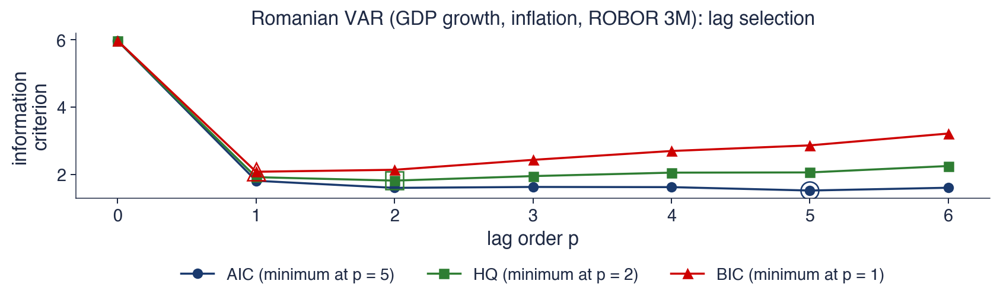
Creșterea PIB-ului, inflația anuală și ROBOR 3M, T1 2005–T2 2026; VAR\((p)\) pentru \(p = 0, \dots, 6\) pe eșantionul comun de 80 de trimestre; cercurile marchează minimele
BIC alege \(p = 1\), HQ \(p = 2\), iar AIC \(p = 5\). Cele trei criterii nu coincid, cum se întîmplă adesea în eșantioane scurte. Valorile AIC arată de ce: 1,812 pentru \(p = 1\), 1,603 pentru \(p = 2\) și 1,523 pentru \(p = 5\). După \(p = 2\) curba este aproape plată, deci minimul AIC de la 5 se sprijină pe o mică îmbunătățire a ajustării, abia compensată de penalizare.
Un VAR(5) ar avea \(3 + 5 \cdot 9 = 48\) de coeficienți pentru circa 80 de trimestre, cîte 16 pe ecuație, iar estimările lui ar fi foarte imprecise. Capitolul folosește \(p = 2\), alegerea HQ, apoi verifică dacă reziduurile sînt zgomot alb; dacă nu ar fi, s-ar adăuga laguri.
Regula practică este să pornim de la criterii, dar să nu ne oprim la ele. Criteriile sînt un ghid pentru compromisul dintre ajustare și numărul de parametri; diagnosticarea reziduurilor, stabilitatea modelului și scopul analizei decid ordinul final.
Pe scurt
BIC alege \(p = 1\), HQ \(p = 2\), AIC \(p = 5\): cele trei criterii nu coincid, cum se întîmplă adesea în eșantioane scurte
AIC: 1,812 pentru \(p = 1\), 1,603 pentru \(p = 2\), 1,523 pentru \(p = 5\): o curbă plată după \(p = 2\)
\(p = 5\) ar însemna \(3 + 5 \cdot 9 = 48\) de coeficienți pentru circa 80 de trimestre
alegem \(p = 2\) (HQ), apoi verificăm dacă reziduurile sînt zgomot alb; dacă nu, adăugăm laguri
O regulă practică: pornim de la criterii, dar nu ne oprim la ele
Tabelul prezintă estimările OLS ale VAR(2) pe 84 de trimestre, T3 2005 – T2 2026. Fiecare coloană este o ecuație, cu variabila dependentă în antet: creșterea PIB-ului \(g_t\), inflația \(\pi_t\) și ROBOR 3M \(i_t\). Fiecare rînd este un regresor: termenul liber și primul și al doilea lag al celor trei variabile. Fiecare celulă dă coeficientul și, între paranteze, statistica lui \(t\); cu 77 de grade de libertate reziduale, \(|t| > 1{,}99\) indică semnificație la 5%. Modelul are 21 de coeficienți.
Ultimul rînd dă \(R^2\) al fiecărei ecuații: 0,16 pentru creșterea PIB-ului, 0,90 pentru inflație și 0,93 pentru ROBOR. Sub tabel, abaterile standard ale reziduurilor sînt 2,32 puncte procentuale pentru \(g\), 1,09 pentru \(\pi\) și 0,87 pentru \(i\); ele măsoară mărimea erorii tipice de prognoză la un trimestru a fiecărei ecuații. Corelația reziduurilor lui \(\pi\) și \(i\) este 0,25: surprizele inflației și ale lui ROBOR tind să vină împreună.
Pe scurt
Regresorul
ecuația \(g_t\)
ecuația \(\pi_t\)
ecuația \(i_t\)
termen liber
\(1{,}09\) (\(2{,}1\))
\(0{,}49\) (\(2{,}0\))
\(-0{,}11\) (\(-0{,}6\))
\(g_{t-1}\)
\(0{,}01\) (\(0{,}1\))
\(0{,}01\) (\(0{,}1\))
\(0{,}14\) (\(3{,}5\))
\(\pi_{t-1}\)
\(0{,}53\) (\(2{,}3\))
\(1{,}26\) (\(11{,}7\))
\(0{,}24\) (\(2{,}8\))
\(i_{t-1}\)
\(-0{,}73\) (\(-2{,}7\))
\(0{,}16\) (\(1{,}2\))
\(1{,}04\) (\(10{,}2\))
\(g_{t-2}\)
\(-0{,}08\) (\(-0{,}7\))
\(-0{,}03\) (\(-0{,}5\))
\(0{,}07\) (\(1{,}7\))
\(\pi_{t-2}\)
\(-0{,}41\) (\(-1{,}7\))
\(-0{,}35\) (\(-3{,}1\))
\(-0{,}17\) (\(-1{,}9\))
\(i_{t-2}\)
\(0{,}54\) (\(2{,}0\))
\(-0{,}16\) (\(-1{,}3\))
\(-0{,}12\) (\(-1{,}2\))
\(R^2\)
0,16
0,90
0,93
OLS pe 84 de trimestre (T3 2005–T2 2026); statisticile \(t\) între paranteze; 21 de coeficienți
Abaterile standard ale reziduurilor: 2,32 (\(g\)), 1,09 (\(\pi\)), 0,87 (\(i\)); corelația reziduurilor lui \(\pi\) și \(i\): 0,25
Inflația este foarte persistentă. Ecuația ei conține \(1{,}26\,\pi_{t-1} - 0{,}35\,\pi_{t-2}\), deci suma coeficienților propriilor laguri este 0,91, aproape de 1. ROBOR este asemănător, cu \(1{,}04\,i_{t-1}\). Valorile \(R^2\) de 0,90 și 0,93 provin în cea mai mare parte din propriul trecut al seriilor: o variabilă care se schimbă lent este bine prognozată de ultima ei valoare, ceea ce spune puțin despre celelalte variabile.
Ecuația lui ROBOR este locul în care efectele încrucișate sînt cele mai clare. Creșterea PIB-ului din trecut (\(t = 3{,}5\)) și inflația din trecut (\(t = 2{,}8\)) intră ambele cu coeficienți pozitivi: dobînda urmează economia, crescînd după o creștere economică puternică și după o inflație ridicată. Creșterea PIB-ului, în schimb, este greu de prognozat: \(R^2\) este 0,16, iar cea mai mare parte a variației ei nu poate fi prevăzută din trecutul celor trei variabile.
Coeficienții individuali ai unor laguri corelate sînt instabili. În ecuația PIB-ului, \(i_{t-1}\) are −0,73, iar \(i_{t-2}\) are 0,54: deoarece \(i_{t-1}\) și \(i_{t-2}\) sînt aproape aceeași variabilă, datele pot determina efectul lor combinat mult mai bine decît fiecare coeficient separat. De aceea sistemul se interpretează prin teste comune, răspunsuri la impuls și prognoze, nu coeficient cu coeficient.
Pe scurt
Inflația este foarte persistentă: \(1{,}26\,\pi_{t-1} -0{,}35\,\pi_{t-2}\); la fel ROBOR: \(1{,}04\,i_{t-1}\)
\(R^2\) de 0,90 și 0,93: cea mai mare parte provine din propriul trecut al seriilor
În ecuația ROBOR contează creșterea PIB-ului din trecut (\(t = 3{,}5\)) și inflația din trecut (\(t = 2{,}8\)): dobînda urmează economia
Creșterea PIB-ului este greu de prognozat: \(R^2 = 0{,}16\)
Coeficienții individuali ai unor laguri corelate sînt instabili (de exemplu \(i_{t-1}\) și \(i_{t-2}\) cu semne opuse în ecuația lui \(g\)): interpretăm sistemul prin teste, răspunsuri și prognoze, nu coeficient cu coeficient
Recapitulare: estimare și alegerea numărului de laguri
OLS ecuație cu ecuație este eficient pentru un VAR, deoarece toate ecuațiile au aceiași regresori. Ordinul se alege cu AIC, BIC sau HQ, fiecare egal cu \(\ln\det\tilde\bSigma(p)\) plus o penalizare, toate comparate pe un eșantion comun.
Ordinele alese satisfac BIC ≤ HQ ≤ AIC; pentru VAR-ul românesc ele sînt 1, 2 și 5, iar capitolul folosește \(p = 2\). Persistența domină ecuațiile inflației și ROBOR, iar sistemul se citește prin teste și răspunsuri, nu prin coeficienți individuali.
Pe scurt
OLS ecuație cu ecuație este eficient: toate ecuațiile au aceiași regresori
AIC, BIC, HQ: \(\ln\det\tilde\bSigma(p)\) plus o penalizare; comparăm pe un eșantion comun
Estimarea unui VAR nu cere nimic în plus față de OLS, iar alegerea ordinului cere un criteriu care cîntărește ajustarea față de numărul de coeficienți. VAR(2) românesc arată tabloul tipic al unui VAR macroeconomic mic: inflație și dobînzi persistente, o creștere economică greu de prognozat și efecte încrucișate concentrate în ecuația dobînzii. Secțiunea următoare verifică dacă modelul a surprins dinamica.
Diagnosticarea reziduurilor
Dacă un VAR surprinde dinamica datelor, reziduurile lui trebuie să fie zgomot alb: necorelate în timp și între ecuații la date diferite. Această secțiune introduce testul portmanteau multivariat pentru această proprietate și un test de normalitate și le aplică pe amîndouă VAR(2) românesc.
Testul portmanteau multivariat al lui Hosking (1980) testează ipoteza nulă \(H_0\) că reziduurile nu au nicio autocorelație și nicio corelație încrucișată pînă la lagul \(h\). Statistica lui este
unde \(\hat{\mathbf{C}}_j = \frac{1}{T}\sum_t\hat\bepsilon_t\hat\bepsilon_{t-j}'\) este matricea de autocovarianță a reziduurilor la lagul \(j\), iar \(\mathrm{tr}\) este urma. Fiecare termen este o versiune matriceală a autocorelației la pătrat, standardizată cu covarianța reziduurilor \(\hat{\mathbf{C}}_0\). În ipoteza \(H_0\),\(Q_h\) are aproximativ o distribuție \(\chi^2\) cu \(K^2(h - p)\) grade de libertate: \(K^2\) corelații pe lag, minus cei \(K^2p\) coeficienți deja estimați. Este testul Ljung–Box multivariat din Capitolul 2, iar un p-value mic înseamnă că reziduurile sînt încă autocorelate.
Normalitatea se verifică cu un test Jarque–Bera multivariat, după Jarque și Bera (1980), pe reziduurile standardizate, care compară asimetria și kurtosis-ul lor cu cele ale distribuției Normale (0 și 3). Normalitatea nu este necesară pentru consistența OLS; contează pentru intervale exacte și în eșantioane mici.
Dacă testul portmanteau respinge, remediile sînt adăugarea de laguri, adăugarea unei variabile sau modelarea rupturilor și a valorilor extreme cu variabile dummy. Se verifică și stabilitatea modelului estimat, prin valorile proprii, iar în eșantioane lungi și stabilitatea parametrilor în timp.
\(H_0\): nicio autocorelație și nicio corelație încrucișată a reziduurilor pînă la lagul \(h\)
\(Q_h = T^2\sum_{j=1}^{h}\frac{1}{T - j}\mathrm{tr}(\hat{\mathbf{C}}_j'\hat{\mathbf{C}}_0^{-1}\hat{\mathbf{C}}_j\hat{\mathbf{C}}_0^{-1})\), \(\hat{\mathbf{C}}_j = \frac{1}{T}\sum_t\hat\bepsilon_t\hat\bepsilon_{t-j}'\): matricea de autocovarianță a reziduurilor la lagul \(j\); \(\mathrm{tr}\): urma
în ipoteza \(H_0\): \(\chi^2\) cu \(K^2(h - p)\) grade de libertate; testul Ljung–Box multivariat (Capitolul 2); un p-value mic: reziduurile sînt încă autocorelate
Normalitatea: un test Jarque–Bera multivariat Jarque și Bera (1980) pe reziduurile standardizate (asimetrie și kurtosis)
normalitatea nu este necesară pentru OLS; contează pentru intervale exacte și pentru eșantioane mici
Dacă testul portmanteau respinge: adăugăm laguri, adăugăm o variabilă sau modelăm rupturile și valorile extreme (variabile dummy)
verificăm și stabilitatea (valorile proprii) și, pentru eșantioane lungi, stabilitatea parametrilor în timp
Graficul arată reziduurile celor trei ecuații ale VAR(2) românesc, din T3 2005 pînă în T2 2026, ca bare, cîte un panou pentru fiecare ecuație. Liniile punctate sînt la \(\pm 2\) abateri standard ale reziduurilor, \(\pm 2\hat\sigma\); pentru reziduuri Normale, aproximativ 95% dintre bare ar fi între ele.
Cele trei panouri au scări diferite, deoarece abaterile standard ale reziduurilor diferă: 2,32 pentru creșterea PIB-ului, 1,09 pentru inflație și 0,87 pentru ROBOR. Ce contează este forma: dacă barele arată ca un zgomot independent și dacă unele trimestre ies mult dincolo de linii.
Pe scurt
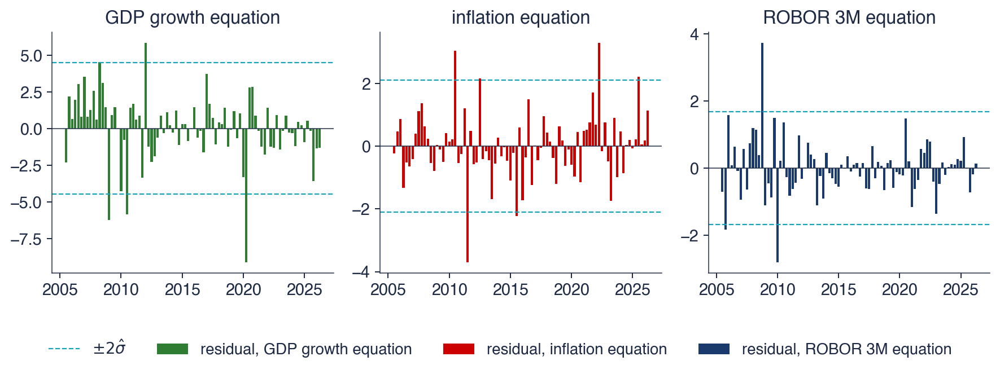
Reziduurile celor trei ecuații, T3 2005–T2 2026, cu \(\pm 2\) abateri standard ale reziduurilor
Cîteva trimestre ies în evidență. Cele mai mari reziduuri sînt −9,1 pentru creșterea PIB-ului în T2 2020, carantina din pandemie; +3,7 pentru ROBOR în T4 2008, criza de lichiditate din 2008; și −3,7 pentru inflație în T3 2011. Sînt evenimente pe care un model liniar al trecutului nu le poate prevedea. Ele dau reziduurilor cozi groase: kurtosis-ul este 6,5 pentru \(g\) și 7,9 pentru \(i\), față de 3 pentru distribuția Normală, iar statistica Jarque–Bera multivariată este 191, cu un p-value sub 0,001. Normalitatea este clar respinsă.
Testul portmanteau dă \(Q_8 = 76{,}7\) cu 54 de grade de libertate, p-value 0,023, și \(Q_{12} = 105{,}3\) cu 90 de grade de libertate, p-value 0,130. Ipoteza de zgomot alb este respinsă la 5% pentru 8 laguri, dar nu pentru 12. Rămîne o anumită corelație pe termen scurt, în parte pentru că ratele anuale ale inflației din trimestre consecutive se suprapun: două trimestre au în comun majoritatea lunilor pe care se măsoară inflația, ceea ce creează autocorelație prin construcție.
Consecința este o încredere măsurată în model. Estimările punctuale pot fi folosite, dar intervalele din secțiunile următoare se bazează pe aproximări pentru eșantioane mari, mai puțin precise cînd reziduurile au cozi groase și sînt ușor autocorelate. Pentru răspunsurile la impuls, capitolul folosește benzi bootstrap, care nu presupun șocuri Normale.
Pe scurt
Cele mai mari reziduuri: PIB \(-\)9,1 în T2 2020 (pandemia), ROBOR \(+3{,}7\) în T4 2008 (criza de lichiditate din 2008), inflația \(-\)3,7 în T3 2011
kurtosis 6,5 (\(g\)) și 7,9 (\(i\)), față de 3 pentru distribuția Normală: Jarque–Bera 191 (p \(<\) 0,001)
Portmanteau: \(Q_8 = 76{,}7\) (\(54\) de grade de libertate, p = 0,023); \(Q_{12} = 105{,}3\) (\(90\) de grade de libertate, p = 0,130)
la limită pentru 8 laguri, acceptabil pentru 12: rămîne o corelație pe termen scurt, în parte din cauza ratelor anuale ale inflației care se suprapun
Consecință: estimările punctuale pot fi folosite, dar intervalele din secțiunile următoare se bazează pe aproximări pentru eșantioane mari; pentru răspunsuri folosim benzi bootstrap
Testul portmanteau are ipoteza nulă că reziduurile sînt zgomot alb, iar statistica lui se compară cu o distribuție \(\chi^2\) cu \(K^2(h - p)\) grade de libertate. Normalitatea nu se verifică de obicei în datele macroeconomice, deoarece crizele produc reziduuri extreme.
Remediile pentru autocorelația rămasă sînt mai multe laguri, mai multe variabile sau variabile dummy pentru trimestrele de criză. Pentru VAR(2) românesc, reziduurile sînt acceptabile la 12 laguri, la limită la 8 și departe de normalitate.
Pe scurt
Testul portmanteau: \(H_0\) reziduuri zgomot alb, \(\chi^2\) cu \(K^2(h - p)\) grade de libertate
Normalitatea nu se verifică în datele macroeconomice: crizele produc valori extreme
Remedii: mai multe laguri, mai multe variabile, dummy pentru trimestrele de criză
Sinteza secțiunii
Diagnosticarea reziduurilor decide cîtă încredere acordăm rezultatelor care urmează. VAR(2) românesc lasă o mică corelație pe termen scurt și are reziduuri cu cozi groase, produse de crizele din 2008 și 2020, deci inferențele lui sînt aproximative, iar benzile lui se calculează mai bine prin bootstrap. Secțiunea următoare folosește modelul pentru a întreba ce variabile ajută la prognoza căror variabile.
Cauzalitatea Granger
Cauzalitatea Granger transformă întrebarea „îl precedă \(x\) pe \(y\)?” într-o afirmație testabilă despre prognoze. Această secțiune dă definiția lui Granger (1969), testul \(F\) într-un VAR, un exemplu rezolvat și rezultate pentru VAR-ul românesc și pentru trei piețe bursiere. Apoi arată trei capcane: variabilele omise, efectele din aceeași perioadă și nestaționaritatea împreună cu așteptările. Fiecare limitează ce poate însemna un test semnificativ sau nesemnificativ.
Granger (1969) a definit cauzalitatea în termeni de prognoză. O variabilă \(x\) cauzează în sens Granger (Granger-causes) pe \(y\) dacă trecutul lui \(x\) îmbunătățește prognoza lui \(y\) făcută din trecutul lui \(y\) și al celorlalte variabile din setul de informații. Formal, eroarea pătratică medie (MSE, mean squared error) a prognozei optime pentru \(y_{t+1}\) este mai mică atunci cînd la informația folosită se adaugă \(x_t, x_{t-1}, \dots\).
Definiția se referă la predictibilitate, nu la cauză și efect în sensul obișnuit. Ea se sprijină pe principiul că o cauză vine înaintea efectului ei; dar a veni înainte nu înseamnă a cauza, iar capcanele de la sfîrșitul secțiunii arată cum o variabilă poate ajuta la prognoza alteia fără să o influențeze. Definiția este și relativă: depinde de ce alte variabile se află în setul de informații.
Între două variabile există patru cazuri: nicio cauzalitate Granger în niciun sens; doar \(x \to y\); doar \(y \to x\); și feedback, \(x \leftrightarrow y\), cînd fiecare ajută la prognoza celeilalte. Clive Granger, cel din fotografie, a primit Premiul Nobel pentru economie în 2003.
DefinițieGranger (1969): \(x\)cauzează în sens Granger pe \(y\)
dacă trecutul lui \(x\) îmbunătățește prognoza lui \(y\) făcută din trecutul lui \(y\) (și al celorlalte variabile)
formal: MSE (mean squared error, eroarea pătratică medie) a prognozei optime pentru \(y_{t+1}\) este mai mică atunci cînd folosim \(x_t, x_{t-1}, \dots\)
O afirmație despre predictibilitate, nu despre cauză și efect
cauza vine înaintea efectului, dar „înainte” nu înseamnă „din cauza”
Într-un VAR(\(p\)), prognoza lui \(y\) folosește \(x\) doar prin coeficienții lui \(x_{t-1}, \dots, x_{t-p}\) din ecuația lui \(y\). Deci \(x\) nu cauzează în sens Granger pe \(y\) exact atunci cînd toți acești coeficienți sînt zero. Într-un VAR(2) cu două variabile, ecuația lui \(y\) este \(y_t = c + a_{11}^{(1)}y_{t-1} + a_{12}^{(1)}x_{t-1} + a_{11}^{(2)}y_{t-2} + a_{12}^{(2)}x_{t-2} + \varepsilon_t\), unde indicele de sus este lagul, iar ipoteza nulă este \(H_0: a_{12}^{(1)} = a_{12}^{(2)} = 0\).
Ipoteza se testează cu testul \(F\) din regresia liniară:
unde \(RSS_U\) este suma pătratelor reziduurilor (RSS, residual sum of squares) din ecuația lui \(y\) cu toți regresorii, modelul nerestricționat, iar \(RSS_R\) aceeași sumă fără lagurile lui \(x\), modelul restricționat. Eliminarea unor regresori crește întotdeauna RSS; testul întreabă dacă o crește mai mult decît ar explica întîmplarea. Un \(F\) mare, cu un p-value mic, înseamnă că lagurile lui \(x\) conțin informație despre \(y\), iar \(H_0\) se respinge.
O formă echivalentă este testul Wald \(W = (\mathbf{R}\hat{\boldsymbol{\beta}})'[\mathbf{R}\hat{\mathbf{V}}\mathbf{R}']^{-1}(\mathbf{R}\hat{\boldsymbol{\beta}})\), aproximativ \(\chi^2(p)\) în ipoteza \(H_0\). Aici \(\hat{\boldsymbol{\beta}}\) sînt coeficienții estimați ai ecuației lui \(y\),\(\mathbf{R}\) este matricea care îi selectează pe cei testați, iar \(\hat{\mathbf{V}}\) este matricea de covarianță estimată a lui \(\hat{\boldsymbol{\beta}}\); în acest cadru \(W = pF\). Ambele versiuni cer variabile staționare.
Pe scurt
Într-un VAR\((p)\), \(x\) nu cauzează în sens Granger pe \(y\) dacă toți coeficienții lui \(x_{t-1}, \dots, x_{t-p}\) din ecuația lui \(y\) sînt zero
VAR(2) cu două variabile: \(H_0\): \(a_{12}^{(1)} = a_{12}^{(2)} = 0\) în \(y_t = c + a_{11}^{(1)}y_{t-1} + a_{12}^{(1)}x_{t-1} + a_{11}^{(2)}y_{t-2} + a_{12}^{(2)}x_{t-2} + \varepsilon_t\)
\(a_{12}^{(j)}\): coeficientul lui \(x_{t-j}\) în ecuația lui \(y\) (indicele de sus este lagul)
\(\hat{\boldsymbol{\beta}}\): coeficienții estimați ai ecuației lui \(y\); \(\mathbf{R}\) îi selectează pe cei testați; \(\hat{\mathbf{V}}\): covarianța estimată a lui \(\hat{\boldsymbol{\beta}}\); ambele versiuni cer variabile staționare
Exemplu rezolvat: este creșterea PIB-ului o cauză Granger pentru ROBOR?
Testul folosește ecuația lui \(i_t\) din VAR(2) românesc, cu \(T = 84\),\(K = 3\) și \(p = 2\). Ecuația nerestricționată, cu \(g_{t-1}\) și \(g_{t-2}\) printre regresori, are \(RSS_U = 58{,}27\); ecuația restricționată, fără ele, are \(RSS_R = 69{,}27\). Eliminarea celor două laguri ale creșterii PIB-ului crește suma pătratelor reziduurilor cu 11,0.
Statistica este \(F = \frac{(69{,}27 - 58{,}27)/2}{58{,}27/77} = \frac{5{,}498}{0{,}7568} = 7{,}26\). Numărătorul este creșterea RSS pe restricție; numitorul este varianța reziduală a ecuației nerestricționate, cu \(84 - 6 - 1 = 77\) de grade de libertate. În ipoteza \(H_0\),\(F\) urmează distribuția \(F(2, 77)\), a cărei valoare critică de 5% este 3,12; p-value-ul este 0,001.
Decizia este respingerea lui \(H_0\): creșterea PIB-ului din trecut ajută la prognoza ROBOR 3M, dat fiind trecutul inflației și al lui ROBOR. Rezultatul este compatibil cu o bancă centrală care înăsprește condițiile monetare atunci cînd economia crește repede, dar testul stabilește doar legătura predictivă.
Pe scurt
Ecuația lui \(i_t\) din VAR(2) românesc, \(T = 84\), \(K = 3\), \(p = 2\)
Tabelul prezintă toate cele șase teste între perechile celor trei variabile din VAR(2). Fiecare rînd numește variabila ale cărei laguri sînt testate (cauza), ecuația în care sînt testate (efectul), statistica \(F\) și p-value-ul ei. Toate testele sînt \(F(2, 77)\), pe T3 2005 – T2 2026, cu valoarea critică de 5% egală cu 3,12; fiecare controlează lagurile celei de-a treia variabile.
Trei relații sînt semnificative la 5%: creșterea PIB → ROBOR (\(F = 7{,}26\), p = 0,001), inflația → ROBOR (\(F = 4{,}74\), p = 0,011) și ROBOR → creșterea PIB (\(F = 4{,}02\), p = 0,022). Inflația → creșterea PIB este la limită, cu p = 0,059. Creșterea PIB → inflația (p = 0,853) și ROBOR → inflația (p = 0,417) sînt departe de semnificație.
Pe scurt
Cauza
Efectul
\(F\)
p
creșterea PIB
inflația
0,16
0,853
creșterea PIB
ROBOR 3M
7,26
0,001
inflația
creșterea PIB
2,94
0,059
inflația
ROBOR 3M
4,74
0,011
ROBOR 3M
creșterea PIB
4,02
0,022
ROBOR 3M
inflația
0,89
0,417
Teste \(F(2, 77)\) în VAR(2), T3 2005–T2 2026; valoarea critică de 5%: 3,12
Semnificative la 5%: creșterea PIB \(\to\) ROBOR, inflația \(\to\) ROBOR, ROBOR \(\to\) creșterea PIB
Dobînda urmează economia: atît creșterea, cît și inflația din trecut ajută la prognoza lui ROBOR. Acesta este tiparul unei funcții de reacție, în care banca centrală răspunde la inflație și la activitatea economică. Testul singur nu poate demonstra că aceasta este regula BNR: ROBOR este o dobîndă de piață, iar băncile pot anticipa aceeași informație fără nicio decizie de politică monetară.
ROBOR nu cauzează inflația în sens Granger, cu p = 0,417: nu există dovezi că dobînzile din trecut îmbunătățesc prognoza inflației. Aceasta nu înseamnă că politica monetară este ineficientă. Efectul poate fi lent și distribuit pe multe trimestre, mic față de zgomotul din inflație sau deja anticipat, astfel încît apare în același trimestru și nu cu un lag. „Nesemnificativ” înseamnă că testul nu poate separa efectul de zgomot în acest eșantion, nu că efectul este zero.
ROBOR → creșterea PIB, cu p = 0,022, spune că dobînzile mai mari preced o creștere mai slabă, sensul așteptat al unei înăspriri monetare. Rezultatul depinde de setul de informații: într-un VAR cu două variabile, doar creșterea PIB-ului și ROBOR, p-value-ul este 0,063.
Pe scurt
Dobînda urmează economia: creșterea și inflația din trecut ajută la prognoza ROBOR
tiparul unei funcții de reacție (banca centrală răspunde la inflație și la activitate); testul singur nu poate demonstra că aceasta este regula BNR
ROBOR nu cauzează inflația în sens Granger (p = 0,417): nicio dovadă că dobînzile din trecut îmbunătățesc prognoza inflației
aceasta nu înseamnă că politica monetară este ineficientă: efectul poate fi lent, mic față de zgomot sau deja anticipat
ROBOR \(\to\) creșterea PIB (p = 0,022): dobînzile mai mari preced o creștere mai slabă; în VAR-ul cu două variabile (PIB, ROBOR) p-value-ul este 0,063
Piețe: New York-ul precedă Frankfurtul și Bucureștiul
Tabelul prezintă teste Granger într-un VAR(4) pentru randamentele logaritmice zilnice ale S&P 500, DAX și BET, pe 6.429 de zile din 2000 pînă în 2026. Ordinul 4 urmează specificația din Diebold și Yilmaz (2012); HQ ar alege \(p = 2\), iar AIC \(p = 8\). Testele sînt \(F(4, \cdot)\), cu cîte patru restricții, iar eșantionul foarte mare face semnificative chiar și efecte mici.
S&P 500 cauzează în sens Granger DAX cu \(F = 94{,}6\) și BET cu \(F = 37{,}8\), ambele cu p-value sub 0,001. Efectele inverse sînt mult mai slabe: DAX → S&P 500 are \(F = 6{,}9\), BET → S&P 500 are \(F = 1{,}0\), cu p = 0,416. Coeficientul randamentului S&P 500 de ieri este 0,218 în ecuația BET, cu eroarea standard 0,018, și 0,346 în ecuația DAX. Fotografia arată sala de tranzacționare a Bursei din Frankfurt, unde se tranzacționează DAX.
Cauzalitatea Granger este puternică și, în esență, într-un singur sens, de la S&P 500 spre DAX și BET. Un randament de 1% al S&P 500 ieri adaugă circa 0,218% la BET azi, celelalte laguri fiind date. BET nu cauzează S&P 500 în sens Granger (p = 0,416): piața mică de la București nu aduce informație pentru New York.
Cauza sînt orele de închidere, adică tranzacționarea nesincronă, nu o reacție lentă a piețelor europene. New York-ul tranzacționează și după închiderea Europei, deci randamentul S&P 500 „de ieri” s-a produs parțial cînd Europa era închisă, iar prețurile europene îl reflectă abia la următoarea deschidere. Pe date săptămînale, unde decalajul orelor de închidere este mic față de lungimea perioadei, efectul este mult mai slab, cum arată Seminarul 6.
Regularitatea nu aduce un profit sigur. Randamentul S&P 500 din seara precedentă este cunoscut înainte de deschiderea Bursei de la București, dar prețurile se ajustează la deschidere: un investitor care cumpără la prețul de deschidere plătește deja prețul ajustat. Cauzalitatea Granger în prețurile de închidere este o proprietate a modului în care sînt înregistrate prețurile, nu o sursă de profit fără risc.
Pe scurt
Cauzalitate puternică, într-un singur sens, de la S&P 500 spre DAX și BET: un randament de 1% al S&P 500 ieri adaugă circa 0,218% la BET azi
BET nu cauzează S&P 500 în sens Granger (p = 0,416)
Cauza: orele de închidere (tranzacționare nesincronă), nu o reacție lentă a pieței
New York tranzacționează și după închiderea Europei; randamentul S&P „de ieri” s-a produs parțial cînd Europa era închisă
pe date săptămînale efectul este mult mai slab (Seminarul 6, B2)
Regularitatea nu aduce un profit sigur: ați cumpăra la deschiderea Bursei de la București, după ce prețurile s-au ajustat deja; cauzalitatea Granger în prețurile de închidere nu este o sursă de profit fără risc
Cauzalitatea Granger depinde de setul de informații. Adăugarea sau eliminarea unei variabile o poate crea sau distruge, cum a arătat Lütkepohl (1982). Mecanismul tipic este un factor comun \(z\) care îl afectează pe \(x\) mai devreme decît pe \(y\): într-un model fără \(z\), trecutul lui \(x\) ține locul trecutului lui \(z\), deci \(x\) pare o cauză a lui \(y\).
Simularea de pe slide-ul următor face mecanismul exact. Sistemul este \(z_t = 0{,}5z_{t-1} + e_t\),\(x_t = 0{,}8z_{t-1} + u_t\) și \(y_t = 0{,}8z_{t-2} + v_t\), unde \(e_t\),\(u_t\) și \(v_t\) sînt zgomote albe independente cu distribuția Normală standard. Variabila \(x\) nu apare niciodată în ecuația lui \(y\). Dar \(x_{t-1} = 0{,}8z_{t-2} + u_{t-1}\) este o măsură zgomotoasă a lui \(z_{t-2}\), care îl determină pe \(y_t\), deci într-un model fără \(z\) lagul lui \(x\) îl prognozează pe \(y\).
Un exemplu cotidian sînt vînzările de înghețată și înecurile. Într-un model cu două variabile, vînzările de înghețată cauzează înecurile în sens Granger, deoarece ambele cresc vara; temperatura, factorul omis, le explică pe amîndouă.
Pe scurt
Cauzalitatea Granger depinde de setul de informații: adăugarea sau eliminarea unei variabile o poate crea sau distruge Lütkepohl (1982)
un factor comun \(z\) care afectează pe \(x\) mai devreme decît pe \(y\) îl face pe \(x\) să pară o cauză a lui \(y\)
Graficul prezintă rezultatul a 1.000 de simulări ale sistemului de pe slide-ul anterior pentru fiecare volum al eșantionului, \(T = 50, 100, 200\) și 500. În fiecare simulare se aplică testul \(F\) pentru „\(x\) nu cauzează \(y\) în sens Granger” la nivelul de 5% într-un VAR(2), o dată în VAR-ul cu două variabile \(x\) și \(y\) (barele roșii, fără \(z\)) și o dată în VAR-ul cu trei variabile \(x\),\(y\) și \(z\) (barele albastre). Înălțimea unei bare este rata de respingere în procente; linia punctată marchează nivelul nominal de 5%.
Cum \(x\) nu ajută niciodată la prognoza lui \(y\) odată ce \(z\) este cunoscut, un test corect ar trebui să respingă în aproximativ 5% din eșantioane. Barele roșii arată ce se întîmplă cînd testul este aplicat într-un set de informații greșit.
Pe scurt
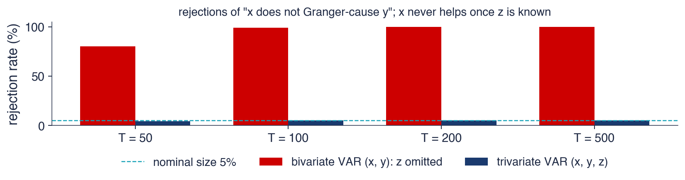
1 000 de simulări pentru fiecare volum al eșantionului, cu sistemul de pe slide-ul anterior; testul \(F\) pentru „\(x\) nu cauzează \(y\) în sens Granger” la 5% într-un VAR(2), cu și fără \(z\)
Fără \(z\), testul respinge în 80% din eșantioane pentru \(T = 50\) și în 100% pentru \(T = 200\): aproape întotdeauna găsește o „cauză”. Mai multe date înrăutățesc situația, nu o îmbunătățesc: testul devine tot mai sigur de o concluzie greșită, deoarece legătura predictivă dintre \(x\) și \(y\) în sistemul cu două variabile este reală; greșită este interpretarea ei.
Cu \(z\) în VAR, rata de respingere este între 4,3% și 5,2% pentru cele patru volume ale eșantionului, aproape de nivelul nominal de 5%: testul se comportă cum trebuie. Cauzalitatea Granger este o proprietate a sistemului ales, nu a lumii.
Datele românești arată aceeași dependență la o scară mai mică. Inflația → creșterea PIB are p = 0,059 în VAR-ul cu trei variabile și 0,173 în VAR-ul cu două variabile, inflația și creșterea PIB-ului: dovezile se schimbă cînd ROBOR este adăugat sau eliminat.
Pe scurt
Fără \(z\), testul respinge în 80% din eșantioane pentru \(T = 50\) și în 100% pentru \(T = 200\): aproape mereu o „cauză”
mai multe date înrăutățesc situația: testul devine tot mai sigur de o concluzie greșită
Cu \(z\) în VAR, rata de respingere este 4,3%–5,2%, apropiată de nivelul nominal de 5%
cauzalitatea Granger este o proprietate a sistemului ales, nu a lumii
Exemplu românesc: inflația \(\to\) creșterea PIB are p = 0,059 în VAR-ul cu trei variabile și 0,173 în cel cu două variabile
Testele Granger folosesc doar laguri. Efectele din aceeași perioadă nu se află în matricele de coeficienți, ci în corelația șocurilor, \(\bSigma\). Între \(x\) și \(y\) există cauzalitate instantanee (instantaneous causality) cînd \(\Cov(\varepsilon_{xt}, \varepsilon_{yt}) \ne 0\), ceea ce se testează cu un test Wald pe elementele din afara diagonalei lui \(\bSigma\).
Cauzalitatea instantanee nu are direcție. O corelație a șocurilor în cursul unui trimestru spune că \(x\) și \(y\) au fost surprinse împreună, dar datele nu pot spune dacă \(x\) l-a mișcat pe \(y\) sau \(y\) pe \(x\) în cursul trimestrului. În VAR-ul românesc, șocurile ROBOR sînt corelate instantaneu cu celelalte șocuri, cu un p-value de 0,041, iar corelația reziduurilor inflației și ROBOR este 0,25.
În datele trimestriale, multe efecte reale au loc în cursul trimestrului: o bancă centrală poate reacționa la publicarea inflației în cîteva săptămîni. Un VAR în care nimic nu este semnificativ în sens Granger poate avea deci legături puternice, toate aflate în \(\bSigma\).Secțiunea despre răspunsurile la impuls arată cum li se dă acestor legături contemporane o direcție și cu ce preț.
Pe scurt
Testele Granger folosesc doar laguri; efectele din aceeași perioadă sînt ascunse în corelația șocurilor \(\bSigma\)
cauzalitate instantanee între \(x\) și \(y\): \(\Cov(\varepsilon_{xt}, \varepsilon_{yt}) \ne 0\); testată printr-un test Wald pe elementele din afara diagonalei lui \(\bSigma\)
Nu are direcție: datele nu pot spune dacă \(x\) l-a mișcat pe \(y\) sau \(y\) pe \(x\) în cursul trimestrului
România: șocurile ROBOR sînt corelate instantaneu cu celelalte (p = 0,041); corelația reziduurilor inflației și ROBOR este 0,25
În datele trimestriale, multe efecte reale au loc în cursul trimestrului: un VAR în care nimic nu este semnificativ în sens Granger poate avea totuși legături puternice (secțiunea 7)
Capcana 3: trenduri, așteptări și sensul cuvîntului „cauză”
Testele \(F\) și Wald au distribuțiile obișnuite doar pentru variabile staționare. Pentru serii integrate, \(I(1)\),Sims, Stock și Watson (1990) au arătat că aceste statistici pot avea distribuții nestandard, deci valorile critice obișnuite sînt greșite. Două remedii sînt uzuale. Dacă seriile nu sînt cointegrate, testul se aplică diferențelor lor. Alternativ, Toda și Yamamoto (1995) au propus estimarea unui VAR(\(p + d_{\max}\)) în niveluri, unde \(d_{\max}\) este ordinul maxim de integrare al seriilor, de obicei 1, și testarea doar a primelor \(p\) laguri; lagurile suplimentare se estimează, dar nu se testează, iar ele refac distribuția \(\chi^2\) standard a statisticii Wald. Seriile cointegrate cer un VECM, subiectul Capitolului 7.
Așteptările creează a doua problemă. Prețurile orientate spre viitor se mișcă înaintea evenimentelor pe care le anticipează. Prețurile acțiunilor cauzează PIB-ul în sens Granger, deoarece investitorii evaluează profiturile așteptate, iar prognozele meteo „cauzează” ploaia; niciuna nu este o cauză în sensul obișnuit. Prognoza precedă evenimentul pentru că este o prognoză.
Modul corect de raportare a unui rezultat semnificativ este deci: „\(x\) ajută la prognoza lui \(y\), date fiind aceste variabile și acest eșantion”. Formularea „\(x\) cauzează pe \(y\)” afirmă mai mult decît poate oferi testul.
Pe scurt
Variabile nestaționare: pentru serii \(I(1)\), testele \(F\) și Wald nu au distribuțiile obișnuite Sims, Stock și Watson (1990)
remedii: testăm pe diferențe (dacă nu există cointegrare) sau abordarea Toda–Yamamoto Toda și Yamamoto (1995): estimăm un VAR\((p + d_{\max})\) în niveluri și testăm doar primele \(p\) laguri
\(d_{\max}\): ordinul maxim de integrare al seriilor (de obicei 1); lagurile suplimentare se estimează, dar nu se testează
\(x\) cauzează în sens Granger pe \(y\) cînd lagurile lui \(x\) îmbunătățesc prognoza lui \(y\); testul este un test \(F\) sau Wald al ipotezei că coeficienții acestor laguri sînt zero. În VAR-ul românesc, creșterea PIB-ului și inflația cauzează ROBOR în sens Granger; pe piețe, S&P 500 cauzează în sens Granger DAX și BET, din cauza fusurilor orare.
Capcanele sînt variabilele omise, care pot crea cauzalitate falsă; efectele instantanee, pe care testul nu le vede; nestaționaritatea, care invalidează distribuțiile obișnuite; și așteptările, care fac prognozele să preceadă evenimentele. Cauzalitatea Granger înseamnă predictibilitate, nu cauzalitate.
Pe scurt
\(x \to y\) (Granger): lagurile lui \(x\) îmbunătățesc prognoza lui \(y\); test \(F\) sau Wald al restricțiilor nule
România: creșterea PIB și inflația \(\to\) ROBOR; piețe: S&P 500 \(\to\) DAX, BET (fusurile orare)
Cauzalitatea Granger înseamnă predictibilitate, nu cauzalitate
Sinteza secțiunii
Cauzalitatea Granger este un concept precis și testabil, dar îngust: spune dacă trecutul unei variabile îmbunătățește prognozele alteia într-un sistem dat. În VAR-ul românesc informația circulă spre dobîndă, iar pe piețe de la New York spre Europa. Simularea a arătat cum o variabilă omisă poate produce un rezultat sigur pe sine și greșit. Secțiunea următoare trece de la întrebarea dacă o variabilă ajută la prognoza alteia la întrebarea cît de mult și cît timp o mișcă.
Funcții de răspuns la impuls
Un răspuns la impuls urmărește cum se mișcă în timp toate variabilele unui VAR după un singur șoc. Această secțiune definește răspunsurile la impuls prin reprezentarea de medie mobilă, explică de ce corelația șocurilor impune o ortogonalizare și introduce descompunerea Cholesky, în care ordinea variabilelor este o ipoteză de identificare. Aplică metoda VAR-ului românesc, arată cît contează ordinea și introduce răspunsurile la impuls generalizate, care nu depind de ordine, cu o aplicație pe piețele bursiere.
Răspunsurile la impuls și necesitatea ortogonalizării
Funcția de răspuns la impuls (IRF, impulse response function) este traiectoria lui \(Y_{j,t+h}\), pentru \(h = 0, 1, 2, \dots\), după un singur șoc în variabila \(k\) la momentul \(t\), toate celelalte șocuri fiind zero. Din reprezentarea de medie mobilă (6.5), răspunsul la o modificare unitară a lui \(\varepsilon_{kt}\) este coloana \(k\) a lui \(\bPhi_h\): elementul \((j, k)\) este răspunsul variabilei \(j\) după \(h\) perioade.
Dificultatea este că șocurile sînt corelate: \(\bSigma\) nu este diagonală. „Un șoc al inflației fără niciun șoc al lui ROBOR” este un experiment pe care datele îl arată rar, deoarece în VAR-ul românesc cele două șocuri vin de obicei împreună, cu corelația 0,25. Un răspuns doar la \(\varepsilon_{\pi}\) descrie o combinație de evenimente atipică, iar răspunsurile la diferitele șocuri se suprapun.
Soluția este rescrierea șocurilor ca \(\bepsilon_t = \mathbf{P}\mathbf{u}_t\), unde \(\mathbf{u}_t\) sînt șocuri necorelate de varianță unitară, iar \(\mathbf{P}\) este o matrice \(K \times K\) cu \(\bSigma = \mathbf{P}\mathbf{P}'\). Răspunsurile la impuls ortogonalizate (orthogonalised impulse responses) sînt atunci
\[\boldsymbol{\Theta}_h = \bPhi_h\mathbf{P},\]
(6.9)
al căror element \((j, k)\) este răspunsul lui \(Y_j\) după \(h\) perioade la un șoc \(u_k\) de o abatere standard. Cum \(u_k\) sînt necorelate, un șoc într-unul dintre ele, celelalte rămînînd la zero, este un experiment cu sens.
Pe scurt
Funcția de răspuns la impuls (IRF): traiectoria lui \(Y_{j,t+h}\), \(h = 0, 1, 2, \dots\), după un șoc unic în variabila \(k\) la momentul \(t\)
din forma de medie mobilă: răspunsul la o modificare unitară a lui \(\varepsilon_{kt}\) este coloana \(k\) a lui \(\bPhi_h\)
Problema: șocurile sînt corelate (\(\bSigma\) nu este diagonală)
„un șoc al inflației fără niciun șoc al ROBOR” este un experiment pe care datele îl arată rar: cele două șocuri vin de obicei împreună (corelația 0,25)
Soluția: rescriem șocurile ca \(\bepsilon_t = \mathbf{P}\mathbf{u}_t\), cu \(\mathbf{u}_t\) necorelate, de varianță unitară: \(\bSigma = \mathbf{P}\mathbf{P}'\)
IRF ortogonalizată: \(\boldsymbol{\Theta}_h = \bPhi_h\mathbf{P}\); elementul \((j, k)\): răspunsul lui \(Y_j\) la un șoc \(u_k\) de o abatere standard
\(\mathbf{P}\): o matrice \(K \times K\) care transformă șocurile necorelate \(\mathbf{u}_t\) în șocurile observate \(\bepsilon_t\)
Multe matrice \(\mathbf{P}\) satisfac \(\bSigma = \mathbf{P}\mathbf{P}'\). Descompunerea Cholesky o alege pe cea unică inferior triunghiulară, cu diagonala pozitivă. Pentru \(\bSigma\) cu varianțele 1 și covarianța 0,5, \(p_{11} = 1\),\(p_{21} = 0{,}5/1 = 0{,}5\) și \(p_{22} = \sqrt{1 - 0{,}25} = 0{,}866\), deci \(\mathbf{P}\) are rîndurile \((1{,}000;\ 0{,}000)\) și \((0{,}500;\ 0{,}866)\).
Forma triunghiulară dă o structură recursivă: \(\varepsilon_{1t} = p_{11}u_{1t}\) și \(\varepsilon_{2t} = p_{21}u_{1t} + p_{22}u_{2t}\). Prima variabilă nu este mișcată de \(u_2\) în aceeași perioadă, în timp ce a doua reacționează imediat la ambele șocuri. Întreaga corelație dintre \(\varepsilon_1\) și \(\varepsilon_2\) este atribuită șocului variabilei așezate prima.
Ordinea contează, așadar. Cu \(y_2\) prima, factorul Cholesky, scris în ordinea inițială, are rîndurile \((0{,}866;\ 0{,}500)\) și \((0{,}000;\ 1{,}000)\): este superior triunghiular, iar acum \(u_2\) poartă partea comună. Regula este să ordonăm variabilele de la cea mai lentă, care nu reacționează la celelalte în aceeași perioadă, la cea mai rapidă. Pentru România ordinea este creșterea PIB-ului, inflația, ROBOR: producția și prețurile se ajustează lent, în timp ce o dobîndă de piață poate răspunde în cursul trimestrului la știrile despre ambele.
Pe scurt
Cholesky: matricea unică \(\mathbf{P}\), inferior triunghiulară, cu diagonala pozitivă, pentru care \(\bSigma = \mathbf{P}\mathbf{P}'\)
Pentru VAR(1) din exemplul rezolvat, cu ordinea \((y_1, y_2)\), răspunsurile la impact sînt \(\boldsymbol{\Theta}_0 = \mathbf{P}\), cu rîndurile \((1{,}000;\ 0{,}000)\) și \((0{,}500;\ 0{,}866)\). Un șoc \(u_1 = 1\) mișcă imediat \(y_1\) cu 1 și \(y_2\) cu 0,500, prin corelația șocurilor; un șoc \(u_2 = 1\) mișcă doar \(y_2\), cu 0,866.
O perioadă mai tîrziu, \(\boldsymbol{\Theta}_1 = \bA\mathbf{P}\), cu rîndurile \((0{,}600;\ 0{,}173)\) și \((0{,}500;\ 0{,}346)\). Răspunsul lui \(y_2\) la \(u_1\) este 0,500, calculat ca \(0{,}3 \cdot 1 + 0{,}4 \cdot 0{,}5\): efectul direct \(a_{21}\) al lui \(y_1\) din perioada trecută, plus persistența \(a_{22}\) a propriului răspuns la impact al lui \(y_2\). Orizonturile următoare rezultă din \(\boldsymbol{\Theta}_h = \bA^h\mathbf{P}\).
Cînd un VAR este scris în rate de creștere, cum este creșterea PIB-ului în VAR-ul românesc, efectul asupra nivelului este răspunsul cumulat \(\sum_{s \le h}\boldsymbol{\Theta}_s\): o succesiune de efecte asupra creșterii se adună într-o modificare permanentă a nivelului.
Graficul este o grilă 3 × 3 de răspunsuri la impuls ortogonalizate ale VAR(2) românesc, pentru orizonturi de la 0 la 12 trimestre. Fiecare rînd este o variabilă care răspunde, iar fiecare coloană un șoc de o abatere standard; panoul „ROBOR 3M ← inflation”, de exemplu, arată cum răspunde ROBOR la un șoc al inflației. Axele verticale sînt în puncte procentuale. Ordinea Cholesky este \(g, \pi, i\).
Zonele colorate sînt benzi de 90% dintr-un bootstrap pe reziduuri cu 500 de replicări, după Kilian (1998): VAR-ul este reestimat pe eșantioane artificiale construite prin reeșantionarea reziduurilor, iar benzile conțin cele 90% din mijloc ale răspunsurilor rezultate. Un răspuns a cărui bandă exclude zero la un orizont se poate distinge de zero la acel orizont. Bootstrap-ul este preferat aici deoarece reziduurile sînt departe de normalitate.
Pe scurt
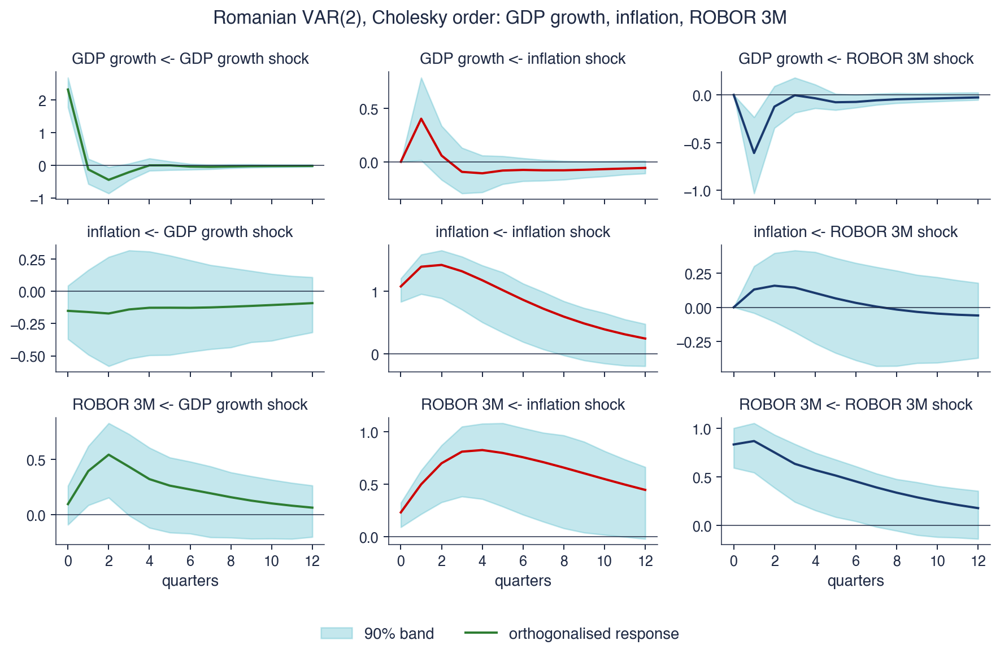
Rîndul: variabila care răspunde; coloana: șocul de o abatere standard; ordinea Cholesky \(g, \pi, i\); benzi de 90% dintr-un bootstrap pe reziduuri (500 de replicări) Kilian (1998)
Un șoc al inflației, de 1,08 puncte procentuale (pp) la impact, crește ROBOR imediat cu 0,23 pp, cu pînă la 0,82 pp după 4 trimestre și încă cu 0,44 pp după 3 ani. Banda exclude zero la 11 din cele 13 orizonturi, ceea ce face din acesta cel mai clar rezultat al VAR-ului. Este corespondentul dinamic al testului Granger inflația → ROBOR.
Un șoc ROBOR reduce creșterea PIB-ului cu 0,61 pp în trimestrul următor, apoi efectul dispare. Inflația, în schimb, crește după un șoc ROBOR, cu pînă la 0,16 pp, un răspuns nesemnificativ, dar cu semnul greșit: o înăsprire monetară ar trebui să reducă inflația. Aceasta este „enigma prețurilor” (price puzzle) documentată de Sims (1992). Un motiv probabil este că dobînda crește atunci cînd banca centrală anticipează inflația; informația pe care o folosește, cum ar fi cursul de schimb sau prețurile energiei, lipsește din VAR, astfel încît inflația anticipată pare să urmeze „șocului”.
Șocurile inflației sînt persistente: răspunsul inflației la propriul șoc este 1,18 pp după un an și 0,24 pp după trei. Estomparea lentă reflectă cea mai mare valoare proprie a modelului, 0,869.
Pe scurt
Un șoc al inflației (1,08 puncte procentuale la impact) crește ROBOR imediat cu 0,23 pp și pînă la 0,82 pp după 4 trimestre; încă 0,44 pp după 3 ani
banda exclude zero la 11 din cele 13 orizonturi: cel mai clar rezultat al VAR-ului
Un șoc ROBOR reduce creșterea PIB-ului cu 0,61 pp în trimestrul următor, apoi efectul dispare
dar inflația crește după un șoc ROBOR (pînă la 0,16 pp, nesemnificativ): „enigma prețurilor” Sims (1992)
un motiv probabil: dobînda crește atunci cînd banca centrală anticipează inflația; informația omisă din VAR (cursul de schimb, prețurile energiei) apare ca „șoc”
Șocurile inflației sînt persistente: 1,18 pp după un an, 0,24 pp după trei
Graficul compară, pentru același VAR(2), cele două răspunsuri care implică inflația și ROBOR în trei variante. Linia albastră continuă folosește ordinea \(g, \pi, i\), cu inflația înaintea lui ROBOR; linia roșie întreruptă folosește \(g, i, \pi\), cu ROBOR înaintea inflației; linia verde punctată arată răspunsurile generalizate din Pesaran și Shin (1998), care nu depind de ordine. Panoul din stînga este răspunsul lui ROBOR la un șoc al inflației, cel din dreapta răspunsul inflației la un șoc ROBOR, ambele în puncte procentuale pentru orizonturi de la 0 la 12 trimestre.
Se schimbă doar poziția inflației și a lui ROBOR una față de cealaltă; creșterea PIB-ului rămîne prima. Diferențele dintre linii provin deci în întregime din felul în care este atribuită corelația de 0,25 dintre șocurile inflației și ROBOR.
Pe scurt
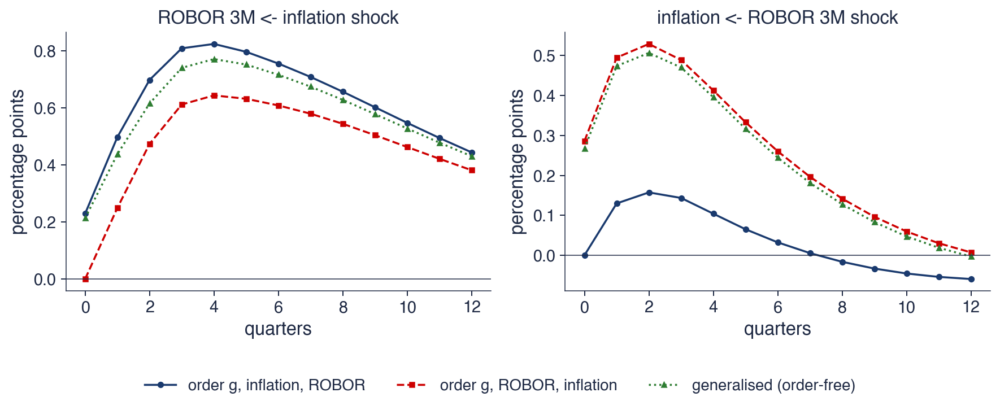
Același VAR(2), două ordini Cholesky (inflația înaintea ROBOR, ROBOR înaintea inflației) și răspunsurile generalizate din Pesaran și Shin (1998), care nu depind de ordine
Răspunsul lui ROBOR la un șoc al inflației are maximul 0,82 pp cu inflația prima, față de 0,64 pp cu ROBOR primul. Cu ROBOR primul, răspunsul la impact este zero prin construcție, deoarece o variabilă așezată înaintea inflației nu poate reacționa la șocul inflației în aceeași perioadă. Forma este aceeași, dar mărimea depinde de ordine.
Răspunsul inflației la un șoc ROBOR se schimbă mult mai mult: 0,16 pp la maxim cu inflația prima, față de 0,53 pp cu ROBOR primul, cu 0,29 pp deja la impact. A doua ordine atribuie lui ROBOR partea comună a celor două șocuri, deci un șoc ROBOR conține acum o parte din ceea ce era o surpriză a inflației, iar „enigma prețurilor” crește.
Ordinea este o ipoteză despre ce variabilă reacționează în cursul trimestrului. Ea trebuie precizată și justificată, iar rezultatele care se schimbă odată cu ea sînt fragile. Aici rezultatul principal, o creștere persistentă a lui ROBOR după un șoc al inflației, rezistă în ambele ordini; răspunsul inflației la ROBOR nu rezistă.
Pe scurt
ROBOR după un șoc al inflației: maximul 0,82 pp (inflația prima), față de 0,64 pp (ROBOR primul)
cu ROBOR primul, răspunsul la impact este zero prin construcție
Inflația după un șoc ROBOR: 0,16 pp, față de 0,53 pp, cu 0,29 pp deja la impact
a doua ordine atribuie partea comună a celor două șocuri (corelația 0,25) lui ROBOR, deci „enigma prețurilor” crește
Ordinea este o ipoteză despre ce variabilă reacționează în cursul trimestrului; trebuie precizată și justificată, iar rezultatele care se schimbă odată cu ea sînt fragile
Răspunsul la impuls generalizat (generalised impulse response) al lui Pesaran și Shin (1998), pornind de la Koop, Pesaran și Potter (1996), evită alegerea unei ordini. El aplică variabilei \(k\) un șoc de o abatere standard și lasă celelalte șocuri să se miște așa cum se mișcă de obicei odată cu ea, potrivit corelațiilor lor istorice:
unde \(\mathbf{e}_k\) este coloana \(k\) a matricei identitate, iar \(\sigma_{kk}\) varianța șocului \(k\). Termenul \(\bSigma\mathbf{e}_k/\sqrt{\sigma_{kk}}\) este vectorul de impact așteptat, dat fiind un șoc de o abatere standard în \(\varepsilon_k\).
Nu este nevoie de nicio ordine, iar pentru variabila așezată prima răspunsul generalizat coincide cu răspunsul Cholesky, deoarece în ambele primul șoc poartă toată corelația lui cu celelalte. Prețul este că șocurile generalizate nu sînt ortogonale: răspunsurile la șocuri diferite se suprapun, pentru că fiecare include mișcările comune, și nu pot fi adunate sau folosite pentru a împărți varianța în ponderi.
Răspunsurile generalizate sînt utile pentru piețe, unde nicio ordine nu este naturală, deoarece prețurile reacționează unele la altele în cîteva secunde. Ele descriu evoluții comune tipice, nu șocuri structurale cu o interpretare economică.
Pe scurt
IRF generalizatăPesaran și Shin (1998) (după Koop, Pesaran și Potter (1996)): aplicăm variabilei \(k\) un șoc de o abatere standard și lăsăm celelalte șocuri să se miște așa cum se mișcă de obicei odată cu ea
Graficul arată răspunsurile DAX (stînga) și BET (dreapta) la un șoc S&P 500 de o abatere standard, 1,21%, într-un VAR(4) al randamentelor zilnice, pentru zilele 0–5, în procente. Sînt comparate trei variante: răspunsuri generalizate (verde), Cholesky cu S&P 500 primul (albastru) și Cholesky în ordinea orelor de închidere, BET, DAX, S&P 500, cu S&P 500 ultimul (roșu).
Ziua 0 este ziua șocului S&P 500. Cele două ordini Cholesky fac ipoteze opuse despre acea zi: cu S&P 500 primul, știrile de la New York mișcă Europa în aceeași zi calendaristică; cu S&P 500 ultimul, nu o pot face, deoarece Europa s-a închis înaintea New York-ului.
Pe scurt
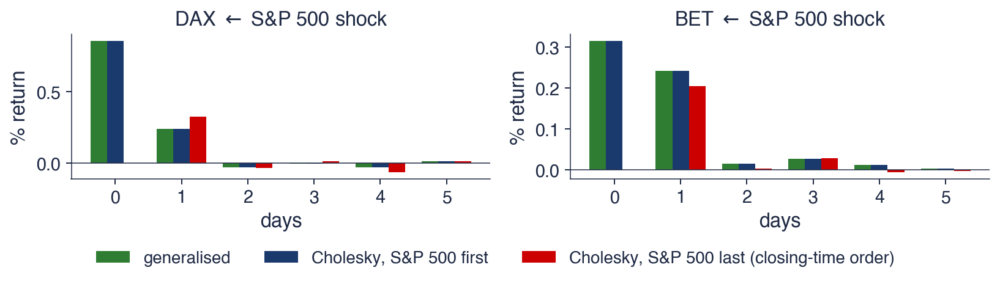
VAR(4) al randamentelor zilnice S&P 500, DAX și BET; șoc S&P de o abatere standard (1,21%); răspunsuri generalizate, Cholesky cu S&P 500 primul și Cholesky în ordinea orelor de închidere (BET, DAX, S&P 500)
Răspunsurile generalizate sînt 0,85% pentru DAX în aceeași zi și 0,24% în ziua următoare; pentru BET, 0,32% și 0,24%. Ele sînt identice cu răspunsurile Cholesky cu S&P 500 primul, cum spune teoria pentru variabila așezată prima.
Cu S&P 500 ultimul, ordinea în care se închid bursele, răspunsul din aceeași zi este zero prin ipoteză, iar răspunsurile din ziua următoare sînt 0,32% pentru DAX și 0,20% pentru BET. În această ordine, corelația din aceeași zi a șocurilor, 0,63 între S&P 500 și DAX, este atribuită Europei: o mișcare comună în aceeași zi calendaristică este citită ca Europa mișcînd New York-ul, nu invers.
În ambele variante, efectul a dispărut după două zile: din ziua 2 toate răspunsurile sînt aproape de zero. Piețele încorporează informația de la New York la următoarea deschidere și apoi nu mai reacționează la ea.
Pe scurt
Generalizate: DAX 0,85% în aceeași zi și 0,24% în ziua următoare; BET 0,32% și 0,24%
identice cu răspunsurile Cholesky cu S&P 500 primul, conform teoriei
Cu S&P 500 ultimul (se închide ultimul), răspunsul din aceeași zi este zero prin ipoteză, iar cele din ziua următoare sînt 0,32% (DAX) și 0,20% (BET)
corelația din aceeași zi (0,63 cu DAX) este atribuită Europei în această ordine
În ambele variante, efectul dispare după două zile: piețele încorporează rapid informația
Răspunsurile la impuls sînt coloanele lui \(\bPhi_h\); răspunsurile ortogonalizate sînt \(\boldsymbol{\Theta}_h = \bPhi_h\mathbf{P}\), cu \(\bSigma = \mathbf{P}\mathbf{P}'\). Factorul Cholesky impune o ordine recursivă, care este o ipoteză și poate schimba rezultatele.
În VAR-ul românesc, ROBOR crește ani la rînd după un șoc al inflației, iar răspunsul inflației la un șoc ROBOR arată „enigma prețurilor”. Răspunsurile generalizate nu depind de ordine, dar nu sînt aditive. Benzile bootstrap asigură inferența.
Cholesky = ordine recursivă; ordinea este o ipoteză și poate schimba rezultatele
România: ROBOR crește ani la rînd după un șoc al inflației; apare „enigma prețurilor”
IRF generalizată: nu depinde de ordine, dar nu este aditivă; benzi bootstrap pentru inferență
Sinteza secțiunii
Răspunsurile la impuls transformă VAR-ul estimat în afirmații despre dinamică: cît de mult și cît timp se mișcă o variabilă după un șoc în alta. Punctul lor slab este identificarea șocurilor, pe care ordinea Cholesky o rezolvă prin ipoteză; verificarea altor ordini și a răspunsurilor generalizate arată ce rezultate depind de ea. Secțiunea următoare folosește aceleași șocuri ortogonale pentru a împărți între șocuri incertitudinea prognozei fiecărei variabile.
Descompunerea varianței erorii de prognoză
Descompunerea varianței erorii de prognoză răspunde la o altă întrebare decît răspunsurile la impuls: ce șocuri explică incertitudinea prognozei fiecărei variabile? Această secțiune deduce descompunerea, o aplică VAR-ului românesc și prezintă indicele de spillover al lui Diebold și Yilmaz, care transformă descompunerea într-o măsură a conectării piețelor, calculată pentru S&P 500, DAX și BET.
Eroarea prognozei la \(h\) pași este suma șocurilor care apar între \(t\) și \(t + h\), ponderate cu matricele mediei mobile: \(\bY_{t+h} - \hat\bY_{t+h|t} = \sum_{s=0}^{h-1}\bPhi_s\bepsilon_{t+h-s} = \sum_{s=0}^{h-1}\boldsymbol{\Theta}_s\mathbf{u}_{t+h-s}\), unde \(\hat\bY_{t+h|t}\) este prognoza lui \(\bY_{t+h}\) făcută la momentul \(t\). Cum șocurile ortogonale \(u_k\) sînt necorelate și au varianța unitară, varianța fiecărui element al acestei erori se împarte în \(K\) părți, cîte una pentru fiecare șoc.
Descompunerea varianței erorii de prognoză (FEVD, forecast error variance decomposition) dă ponderea șocului \(k\) în varianța erorii de prognoză la \(h\) pași a lui \(Y_j\):
unde \(\theta_{jk,s}\) este elementul \((j, k)\) al lui \(\boldsymbol{\Theta}_s\). Fiecare rînd însumează 100% peste șocuri. Descompunerea depinde de ordinea Cholesky, iar la \(h = 1\) prima variabilă este explicată 100% de propriul șoc, deoarece niciun alt șoc nu o mișcă la impact.
Pentru VAR(1) din exemplul rezolvat, la \(h = 2\) varianța erorii de prognoză a lui \(y_2\) este 1,37. Șocul \(u_1\) contribuie cu pătratele celor două răspunsuri ale sale, impactul \(p_{21} = 0{,}5\) și răspunsul din perioada următoare 0,500, deci ponderea lui este \((0{,}5^2 + 0{,}5^2)/1{,}37 = 36{,}5\%\); restul de 63,5% provine din \(u_2\).
Pe scurt
Eroarea de prognoză la \(h\) pași: \(\bY_{t+h} - \hat\bY_{t+h|t} = \sum_{s=0}^{h-1}\bPhi_s\bepsilon_{t+h-s} = \sum_{s=0}^{h-1}\boldsymbol{\Theta}_s\mathbf{u}_{t+h-s}\)
șocurile ortogonale \(u_k\) sînt necorelate, deci varianța se împarte în \(K\) părți
FEVD: \(\omega_{jk}(h) = \dfrac{\sum_{s=0}^{h-1}\theta_{jk,s}^2}{\sum_{s=0}^{h-1}\sum_{m=1}^{K}\theta_{jm,s}^2}\), ponderea șocului \(k\) în varianța erorii de prognoză la \(h\) pași a lui \(Y_j\)
\(\theta_{jk,s}\): elementul \((j, k)\) al lui \(\boldsymbol{\Theta}_s\); \(\hat\bY_{t+h|t}\): prognoza lui \(\bY_{t+h}\) făcută la momentul \(t\)
fiecare rînd însumează 100%; depinde de ordinea Cholesky; la \(h = 1\) prima variabilă este explicată 100% de propriul șoc
Exemplu (VAR(1) din secțiunea 2), \(h = 2\): varianța erorii pentru \(y_2\) este 1,37; șocul \(u_1\) explică 36,5%
\((0{,}5^2 + 0{,}5^2)/1{,}37\): impactul \(p_{21} = 0{,}5\) și răspunsul din perioada următoare 0,500
Graficul arată FEVD pentru VAR(2) românesc, cîte un panou pentru fiecare variabilă, pentru orizonturi de 1–12 trimestre, cu ordinea Cholesky \(g, \pi, i\). Fiecare bară este împărțită în ponderile celor trei șocuri ortogonale: creșterea PIB-ului (verde), inflația (roșu) și ROBOR 3M (albastru). Toate barele ajung la 100%.
Cele trei panouri arată trei tipare diferite. Creșterea PIB-ului și inflația sînt dominate la fiecare orizont de propriile șocuri, în timp ce compoziția barelor ROBOR se schimbă cu orizontul: albastrul domină la orizonturi scurte, roșul la orizonturi lungi.
Pe scurt
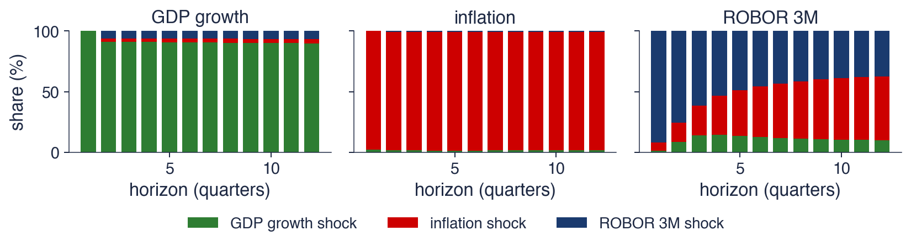
Ponderea fiecărui șoc ortogonal în varianța erorii de prognoză, orizonturi de 1–12 trimestre, ordinea Cholesky \(g, \pi, i\)
Pentru ROBOR, propriile șocuri explică 92% din varianța erorii de prognoză la un trimestru, dar doar 37% după trei ani; la acest orizont, șocurile inflației explică 53%, iar cele ale creșterii PIB-ului 10%. Pe termen lung, incertitudinea despre dobîndă provine mai ales din inflație: pentru a prognoza ROBOR peste trei ani trebuie prognozată, înainte de toate, inflația.
Inflația este explicată în proporție de 97% de propriile șocuri chiar și după 12 trimestre, iar creșterea PIB-ului în proporție de 90%. În acest VAR mic, inflația este determinată de factori din afara modelului, cum ar fi prețurile energiei și ale alimentelor, cursul de schimb și taxele, care apar ca șocuri proprii ale inflației. Un VAR mai mare ar putea atribui o parte din această varianță acelor factori.
FEVD și testele Granger sînt în acord: informația circulă de la inflație și producție spre dobîndă și aproape deloc în sens invers.
Pe scurt
ROBOR: propriile șocuri explică 92% la un trimestru, dar doar 37% după trei ani; șocurile inflației explică 53%, cele ale PIB-ului 10%
pe termen lung, dobînda este determinată mai ales de inflație
Inflația: 97% propriile șocuri chiar și după 12 trimestre; creșterea PIB: 90% propriile șocuri
în acest VAR mic, inflația este determinată de factori din afara modelului (energie, alimente, curs de schimb, taxe)
FEVD și testele Granger sînt în acord: informația circulă de la inflație și producție spre dobîndă
Diebold și Yilmaz au întrebat cît din incertitudinea prognozei unei piețe provine din șocurile altor piețe și cum se schimbă aceasta în timp. Diebold și Yilmaz (2009) au folosit o FEVD Cholesky a randamentelor săptămînale a 19 piețe bursiere. Diebold și Yilmaz (2012) au înlocuit-o cu FEVD generalizată, construită din răspunsuri la impuls generalizate, care elimină dependența de ordine.
Indicele de spillover este ponderea medie a varianței erorii de prognoză care provine din celelalte piețe:
unde \(\tilde\omega_{jk}\) este FEVD generalizată, rescalată astfel încît fiecare rînd să însumeze 1; rescalarea este necesară deoarece ponderile generalizate nu însumează singure 1. Specificația din Diebold și Yilmaz (2012) este un VAR(4), un orizont \(H = 10\) zile și ferestre mobile de 200 de zile, astfel încît indicele să poată fi urmărit în timp.
Rezultatul lor principal este că spillover-ul crește puternic în crize: piețele devin mai conectate exact atunci cînd diversificarea este cea mai necesară. Slide-urile următoare calculează indicele pentru S&P 500, DAX și BET.
Pe scurt
Întrebarea: cît din incertitudinea prognozei unei piețe provine din șocurile altor piețe și cum se schimbă aceasta în timp?
Indicele de spillover: \(S(H) = \frac{100}{K}\sum_{j \ne k}\tilde\omega_{jk}(H)\), ponderea medie a șocurilor celorlalte piețe
\(\tilde\omega_{jk}\): FEVD generalizată rescalată astfel încît fiecare rînd să însumeze 1; specificația din Diebold și Yilmaz (2012): VAR(4), \(H = 10\) zile, ferestre mobile de 200 de zile
Rezultatul: spillover-ul crește puternic în crize; piețele devin mai conectate exact atunci cînd diversificarea este cea mai necesară
Tabelul este o FEVD generalizată la un orizont de 10 zile, estimată pe întregul eșantion 2000–2026. Rîndul \(j\) dă ponderile varianței erorii de prognoză la 10 zile a pieței \(j\) datorate șocurilor din fiecare piață, în procente; fiecare rînd însumează 100. Diagonala este ponderea propriilor șocuri ale unei piețe; coloana „de la ceilalți” este suma pe rînd a elementelor din afara diagonalei, iar rîndul „spre ceilalți” este suma pe coloană a elementelor din afara diagonalei, adică ceea ce transmite o piață celorlalte.
S&P 500 primește 27,1% de la DAX, iar DAX 28,2% de la S&P 500: cele două piețe mari sînt puternic conectate în ambele sensuri. BET primește 14,7% de la celelalte și transmite doar 9,1%: este o piață mică și un receptor net. Indicele total de spillover, media coloanei „de la ceilalți”, este 26,4%.
Pe scurt
Spre \(\leftarrow\) de la (%)
S&P 500
DAX
BET
de la ceilalți
S&P 500
69,2
27,1
3,7
30,8
DAX
28,2
66,4
5,4
33,6
BET
7,2
7,5
85,3
14,7
spre ceilalți
35,4
34,6
9,1
indice 26,4
Rîndul \(j\): ponderile varianței erorii de prognoză la 10 zile a pieței \(j\) datorate șocurilor din fiecare piață (FEVD generalizată, întregul eșantion 2000–2026)
S&P 500 primește 27,1% de la DAX, iar DAX 28,2% de la S&P 500; BET primește 14,7% și transmite doar 9,1%: o piață mică, receptoare netă
Graficul arată indicele total de spillover al randamentelor zilnice S&P 500, DAX și BET, calculat dintr-o FEVD generalizată la 10 zile a unui VAR(4) estimat pe ferestre mobile de 200 de zile de tranzacționare. Fiecare punct folosește cele 200 de zile care se încheie la acea dată; linia roșie întreruptă este indicele pe întregul eșantion, 26,4%, iar media indicelui pe ferestre mobile este 29,0%. Liniile verticale marchează patru evenimente: falimentul Lehman Brothers în 2008, retrogradarea ratingului de credit al SUA în 2011, prăbușirea din pandemia COVID-19 în 2020 și invazia rusă a Ucrainei în 2022.
Indicele se mișcă în trepte: sare cînd o perioadă turbulentă intră în fereastră și scade după 200 de zile, cînd acea perioadă iese din ea.
Pe scurt
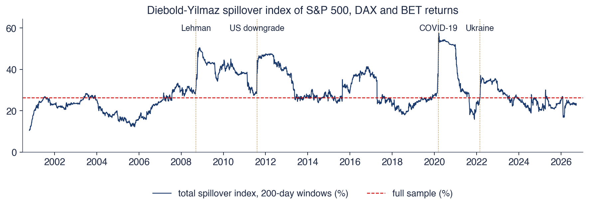
Indicele total de spillover pentru randamentele zilnice S&P 500, DAX și BET: FEVD generalizată la 10 zile dintr-un VAR(4), ferestre mobile de 200 de zile de tranzacționare (în medie 29,0%)
Indicele a crescut de la 28% în 2007 la 47% în T4 2008, după falimentul Lehman Brothers, și a atins maximul, 57,5%, pe 17 martie 2020, în prăbușirea din pandemia COVID-19. Este același tipar pe care Diebold și Yilmaz (2009) l-au găsit pentru 19 piețe: conectarea crește brusc în crize și scade lent.
Ultima valoare este 22,7%, sub indicele pe întregul eșantion, de 26,4%. Salturile sînt în parte mecanice: o fereastră de 200 de zile care conține o prăbușire este dominată de ea timp de 200 de zile, deci indicele rămîne ridicat pînă cînd prăbușirea iese din fereastră, ceea ce explică palierele plate de după fiecare eveniment.
Pentru un portofoliu care conține BET, lecția este că diversificarea între aceste piețe ajută cel mai puțin atunci cînd este cea mai necesară: într-o criză, o parte mai mare din riscul fiecărei piețe provine din șocuri comune tuturor.
Pe scurt
De la 28% în 2007 la 47% în T4 2008 (după Lehman); maximul 57,5% pe 17 martie 2020, în prăbușirea din pandemia COVID-19
același tipar ca în Diebold și Yilmaz (2009): conectarea piețelor crește brusc în crize și scade lent
Ultima valoare: 22,7%, sub indicele din întregul eșantion (26,4%)
salturile sînt în parte mecanice: o fereastră de 200 de zile care conține o prăbușire este dominată de ea timp de 200 de zile
Pentru un portofoliu care conține BET: diversificarea între aceste piețe ajută cel mai puțin atunci cînd este cea mai necesară
FEVD dă ponderea fiecărui șoc ortogonal în varianța erorii de prognoză la orizontul \(h\); fiecare rînd însumează 100%. În VAR-ul românesc, ROBOR este determinat de inflație pe orizonturi lungi, în timp ce inflația este determinată mai ales de propriile șocuri.
Indicele de spillover Diebold–Yilmaz este ponderea totală din afara diagonalei a FEVD generalizate. Pentru S&P 500, DAX și BET, el atinge maximele în crize, în 2008 și în 2020.
Pe scurt
FEVD: ponderea fiecărui șoc ortogonal în varianța erorii de prognoză la \(h\) pași; rîndurile însumează 100%
România: ROBOR este determinat de inflație pe orizonturi lungi; inflația mai ales de propriile șocuri
Indicele de spillover Diebold–Yilmaz: ponderea totală din afara diagonalei a FEVD generalizate
Spillover-ul dintre S&P 500, DAX și BET atinge maximele în crize (2008, 2020)
Sinteza secțiunii
Descompunerea varianței rezumă sistemul prin sursele incertitudinii prognozelor sale. În VAR-ul românesc confirmă că inflația determină dobînda pe orizonturi lungi; între piețe măsoară conectarea și arată cum crește aceasta în crize. Secțiunea următoare se ocupă de prognozele însele.
Prognoza cu un VAR
Această secțiune arată cum se obțin dintr-un VAR prognozele punctuale și intervalele de prognoză, le aplică VAR(2) românesc pe doi ani și întreabă dacă VAR-ul prognozează mai bine decît metodele univariate. Răspunsul cere o evaluare pseudo în afara eșantionului, o comparație cu metode de referință simple și un test de acuratețe egală; el este dat pentru România și pentru Statele Unite.
Prognozele punctuale se calculează prin recurență: \(\hat\bY_{T+h|T} = \bc + \bA_1\hat\bY_{T+h-1|T} + \dots + \bA_p\hat\bY_{T+h-p|T}\), unde \(\hat\bY_{T+j|T} = \bY_{T+j}\) pentru \(j \le 0\), deci valorile observate se folosesc oriunde există. Fiecare pas folosește prognozele pașilor anteriori în locul valorilor viitoare necunoscute. Pentru un VAR stabil, prognozele converg spre media \(\boldsymbol{\mu}\) cînd \(h\) crește.
Matricea de covarianță a erorii de prognoză la \(h\) pași rezultă din reprezentarea de medie mobilă:
Ea crește cu \(h\) și converge spre varianța procesului, \(\bGamma(0)\): departe în viitor, prognoza este media, iar eroarea ei are varianța seriei. Intervalul de 95% pentru variabila \(j\) este \(\hat Y_{j,T+h|T} \pm 1{,}96\sqrt{\sigma_{jj}(h)}\), unde \(\sigma_{jj}(h)\) este elementul \((j, j)\) al lui \(\bSigma(h)\). El presupune șocuri Normale și ignoră incertitudinea parametrilor estimați, deci este oarecum prea îngust în eșantioane mici.
Pentru exemplul rezolvat, \(\bSigma(2) = \bSigma + \bA\bSigma\bA'\), cu varianțele 1,39 pentru \(y_1\) și 1,37 pentru \(y_2\), față de 1 pentru prognoza la un pas. Logica este cea a prognozelor ARMA din Capitolul 2, cu matrice în locul numerelor.
Pe scurt
Prognozele punctuale prin recurență: \(\hat\bY_{T+h|T} = \bc + \bA_1\hat\bY_{T+h-1|T} + \dots + \bA_p\hat\bY_{T+h-p|T}\), cu \(\hat\bY_{T+j|T} = \bY_{T+j}\) pentru \(j \le 0\)
pentru un VAR stabil ele converg spre media \(\boldsymbol{\mu}\) cînd \(h\) crește
Covarianța erorii: \(\bSigma(h) = \sum_{s=0}^{h-1}\bPhi_s\bSigma\bPhi_s'\); crește cu \(h\) spre \(\bGamma(0)\)
intervalul de 95% pentru \(Y_j\): \(\hat Y_{j,T+h|T} \pm 1{,}96\sqrt{\sigma_{jj}(h)}\), \(\sigma_{jj}(h)\): elementul \((j, j)\) al lui \(\bSigma(h)\) (șocuri Normale; incertitudinea parametrilor este ignorată)
exemplu (secțiunea 2): \(\bSigma(2) = \bSigma + \bA\bSigma\bA'\), cu varianțele 1,39 și 1,37
Aceeași logică precum prognozele ARMA din Capitolul 2, cu matrice în locul numerelor
Graficul arată datele din 2019 pînă în T2 2026 și prognozele VAR(2) pentru T3 2026 – T2 2028, opt trimestre, pentru creșterea PIB-ului, inflație și ROBOR 3M. Liniile continue sînt datele, liniile întrerupte prognozele punctuale, iar zonele colorate intervalele de 95%.
Intervalele se lărgesc cu orizontul în ritmuri diferite. Intervalul creșterii PIB-ului își atinge aproape imediat lățimea completă, deoarece creșterea PIB-ului are puțină persistență; intervalele inflației și ale lui ROBOR se lărgesc treptat, deoarece erorile seriilor persistente se acumulează.
Pe scurt
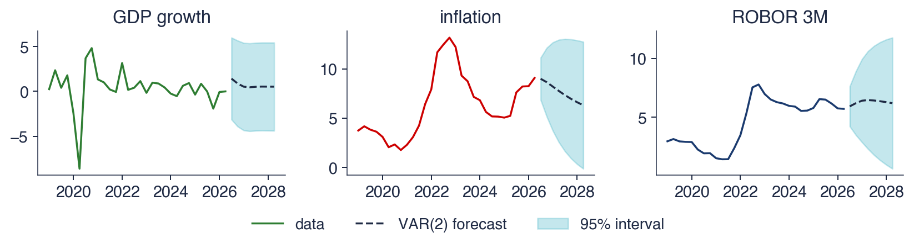
Date pînă în T2 2026; prognoze pentru T3 2026–T2 2028, cu intervale de 95%
Inflația este prognozată să scadă de la 9,1% în T2 2026 la 7,7% după un an și la 6,3% după doi, cu un interval de 95% de la −0,1% la 12,7% la orizontul de doi ani. Prognozele se îndreaptă spre media VAR-ului, 4,8% atît pentru inflație, cît și pentru ROBOR, dar lent, deoarece cea mai mare valoare proprie este 0,869.
ROBOR este prognozat la 6,4% după un an și la 6,2% după doi. Creșterea PIB-ului este prognozată la aproximativ 0,5% pe trimestru, cu un interval de la −4,4% la 5,3%. Intervalul este larg pentru că valorile extreme din 2009 și 2020 măresc abaterea standard estimată a reziduurilor \(\hat\sigma_g\) și, odată cu ea, lățimea fiecărui interval.
Acestea sînt prognoze mecanice. VAR-ul nu știe nimic despre buget, prețurile energiei sau deciziile BNR; el extrapolează dinamica medie din 2005–2026. Valoarea lui este aceea de reper transparent, față de care prognozele bazate pe judecată pot fi comparate, iar abaterile lor explicate.
Pe scurt
Inflația: de la 9,1% în T2 2026 la 7,7% după un an și 6,3% după doi (95%: \([-0{,}1; 12{,}7]\))
prognozele se îndreaptă spre media VAR-ului (inflația 4,8%, ROBOR 4,8%), lent, deoarece cea mai mare valoare proprie este 0,869
ROBOR: 6,4% după un an, 6,2% după doi; creșterea PIB: 0,5% pe trimestru, cu intervalul \([-4{,}4; 5{,}3]\)
intervalul PIB-ului este larg pentru că valorile extreme din 2009 și 2020 măresc \(\hat\sigma_g\)
O prognoză mecanică: nu știe nimic despre buget, prețurile energiei sau deciziile BNR; valoarea ei este aceea de reper transparent
O evaluare corectă folosește un plan pseudo în afara eșantionului (pseudo out-of-sample). La fiecare origine de prognoză \(t\), modelul este reestimat doar pe datele pînă la \(t\), se face prognoza pentru \(t + h\), iar originea avansează cu o perioadă, cu o fereastră care crește. Prognozele nu sînt evaluate niciodată pe date folosite la estimarea modelului, regula din Capitolul 0.
VAR-ul este comparat cu două metode de referință: mersul aleator, care prognozează nicio schimbare, și un AR(\(p\)) univariat pentru fiecare variabilă, cu \(p\) ales după AIC. Întrebarea nu este „este VAR-ul bun?”, ci „adaugă ceva celelalte variabile la propriul trecut al seriei?”. Doar comparația cu modelul AR răspunde la ea.
Acuratețea se măsoară prin rădăcina erorii pătratice medii (RMSE, root mean squared error) relativă la mersul aleator, astfel încît o valoare sub 1 înseamnă mai bine decît nicio schimbare. Testul lui Diebold și Mariano (1995) verifică dacă două prognoze au acuratețe egală. Statistica lui, DM, este media diferenței dintre erorile pătratice ale celor două prognoze împărțită la eroarea ei standard și are aproximativ distribuția \(N(0, 1)\) în ipoteza nulă a acurateței egale.
Pe scurt
Evaluarea pseudo în afara eșantionului (pseudo out-of-sample): reestimăm doar pe datele pînă la \(t\), prognozăm \(t + h\), avansăm \(t\) (fereastră care crește)
nu evaluăm niciodată pe datele folosite la estimare (Capitolul 0)
Metode de referință: mersul aleator (nicio schimbare) și un AR\((p)\) univariat pentru fiecare variabilă, \(p\) după AIC
întrebarea nu este „este VAR-ul bun?”, ci „adaugă ceva celelalte variabile la propriul trecut al seriei?”
Măsuri: RMSE relativ la mersul aleator (sub 1: mai bun); testul Diebold–Mariano Diebold și Mariano (1995) pentru acuratețe egală
statistica DM: media diferenței erorilor pătratice împărțită la eroarea ei standard; aproximativ \(N(0, 1)\) în ipoteza \(H_0\)
Graficul prezintă RMSE al prognozelor AR (barele ocru) și VAR (barele albastre), fiecare împărțit la RMSE al mersului aleator; linia punctată de la 1 este mersul aleator. Panoul din stînga este România, cu 46 de prognoze pe orizont din originile T4 2014 – T1 2026, pentru orizonturile \(h = 1\) și 4 trimestre și pentru fiecare dintre \(g\),\(\pi\) și \(i\). Panoul din dreapta este VAR-ul american din studiul de caz Stock–Watson, cu prognoze pentru T1 1985 – T4 2000, perioada de evaluare din Stock și Watson (2001), pentru orizonturile de 2, 4 și 8 trimestre și pentru fiecare dintre inflația \(\pi\), șomajul \(u\) și dobînda federală \(R\).
O bară albastră sub bara ocru înseamnă că VAR-ul este mai bun decît AR-ul univariat; o bară peste 1 înseamnă că modelul este mai slab decît prognoza fără nicio schimbare.
Pe scurt
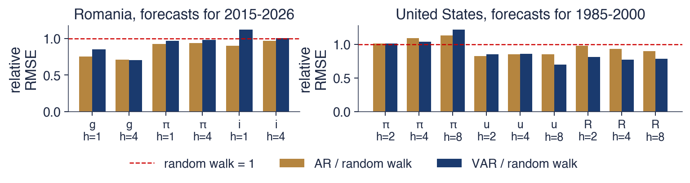
RMSE relativ (model / mers aleator). Stînga: România, 46 de prognoze pe orizont, originile T4 2014–T1 2026; dreapta: VAR-ul american din secțiunea 10, prognoze pentru T1 1985–T4 2000, perioada de evaluare din Stock și Watson (2001)
Pentru România, la orizontul de un trimestru, VAR-ul este mai puțin precis decît AR pentru creșterea PIB-ului: RMSE-ul lui relativ este 0,85, față de 0,75, iar statistica Diebold–Mariano este 2,59, cu p-value 0,010. Nu este mai bun nici pentru inflație sau ROBOR. VAR-ul are 21 de coeficienți estimați pe 38–84 de trimestre, în funcție de origine, iar eroarea de estimare anulează informația adusă de celelalte variabile.
Pentru Statele Unite, la orizontul de 8 trimestre, VAR-ul este mai precis decît AR pentru șomaj, 0,70 față de 0,85, și pentru dobînda federală, 0,79 față de 0,90. Pentru inflație, niciun model nu este mai precis decît mersul aleator la acest orizont și în această perioadă: RMSE relativ al VAR-ului este 1,22.
VAR-urile ajută cînd eșantionul este lung și legăturile dintre variabile sînt puternice, ca în datele americane, cu 25 de ani de date de estimare și o reacție clară a politicii monetare. În eșantioane scurte și zgomotoase, un AR simplu este greu de depășit.
Pe scurt
România, orizontul de un trimestru: VAR-ul este mai puțin precis decît AR pentru creșterea PIB-ului (0,85 față de 0,75; DM = 2,59, p = 0,010) și nu este mai bun pentru inflație sau ROBOR
21 de coeficienți pe 38–84 de trimestre: erorile de estimare anulează informația adusă de celelalte variabile
Statele Unite, orizontul de 8 trimestre: VAR-ul este mai precis decît AR pentru șomaj (0,70 față de 0,85) și pentru dobînda federală (0,79 față de 0,90)
pentru inflație, niciun model nu este mai precis decît mersul aleator (1,22) la acest orizont, în această perioadă
VAR-urile ajută cînd eșantionul este lung și legăturile sînt puternice; în eșantioane scurte și zgomotoase, un AR simplu este greu de depășit
Prognozele punctuale se calculează recursiv, iar covarianța erorii de prognoză este \(\sum_s\bPhi_s\bSigma\bPhi_s'\). Prognozele se evaluează în afara eșantionului, față de mersul aleator și de modele AR univariate.
Pentru România, VAR-ul nu aduce niciun cîștig de prognoză; pentru Statele Unite în 1985–2000, aduce cîștiguri pentru șomaj și dobîndă.
Evaluăm în afara eșantionului, față de mersul aleator și de modele AR univariate
România: niciun cîștig din VAR; SUA 1985–2000: cîștiguri pentru șomaj și dobîndă
Sinteza secțiunii
Un VAR produce prognoze comune cu intervale prin aceeași recurență ca un model ARMA, iar prognozele lui revin la medie cu viteza stabilită de cea mai mare valoare proprie. Dacă prognozează mai bine decît modelele univariate este o întrebare empirică, la care se răspunde în afara eșantionului: adesea nu, deoarece estimarea multor coeficienți costă mai mult decît valorează informația suplimentară. Secțiunea următoare revine la interpretarea șocurilor.
VAR-uri structurale și un studiu de caz de referință
VAR-ul în formă redusă descrie datele; un VAR structural dă șocurilor lui un sens economic, de exemplu un șoc de politică monetară. Această secțiune arată cum sînt legate cele două și de ce trecerea de la unul la celălalt cere întotdeauna ipoteze. Apoi reestimează VAR-ul lui Stock și Watson (2001) pentru Statele Unite și se încheie cu moștenirea abordării VAR.
unde \(\mathbf{u}_t\) sînt șocuri structurale necorelate, \(\mathbf{d}\) este vectorul termenilor liberi, \(\mathbf{B}_1, \dots, \mathbf{B}_p\) sînt coeficienții structurali ai lagurilor, iar \(\mathbf{B}_0\) conține efectele contemporane, de exemplu reacția dobînzii de politică monetară la inflația din acest trimestru. Înmulțind cu \(\mathbf{B}_0^{-1}\) obținem forma redusă (6.2), cu \(\bA_j = \mathbf{B}_0^{-1}\mathbf{B}_j\) și \(\bepsilon_t = \mathbf{B}_0^{-1}\mathbf{u}_t\): fiecare șoc al formei reduse este o combinație de șocuri structurale.
Datele identifică doar forma redusă. Matricea de covarianță \(\bSigma\) are \(K(K+1)/2\) elemente distincte, iar \(\mathbf{B}_0^{-1}\) are \(K^2\) elemente; cu șocurile structurale normalizate la varianța unitară, sînt necesare încă \(K(K-1)/2\) restricții pentru a obține \(\mathbf{B}_0^{-1}\) din \(\bSigma\). Descompunerea Cholesky pune \(\mathbf{B}_0^{-1} = \mathbf{P}\), inferior triunghiulară, cu exact \(K(K-1)/2\) zerouri: acesta este SVAR-ul recursiv din Sims (1980). Alte scheme folosesc restricții pe termen lung, restricții de semn sau instrumente externe, dincolo de acest curs.
Lecția generală este că datele identifică forma redusă, iar o interpretare structurală se bazează întotdeauna pe ipoteze care trebuie argumentate economic. Răspunsurile la impuls ale VAR-ului românesc sînt structurale doar în măsura în care ordinea creșterea PIB-ului, inflația, ROBOR este o descriere credibilă a ceea ce reacționează în cursul unui trimestru.
\(\mathbf{d}\): termenii liberi; \(\mathbf{B}_1, \dots, \mathbf{B}_p\): coeficienții structurali ai lagurilor; \(\mathbf{B}_0\): efectele contemporane (de exemplu, dobînda de politică monetară reacționează la inflația din acest trimestru)
înmulțind cu \(\mathbf{B}_0^{-1}\) obținem forma redusă, cu \(\bepsilon_t = \mathbf{B}_0^{-1}\mathbf{u}_t\)
Identificarea: \(\bSigma\) are \(K(K+1)/2\) elemente distincte, \(\mathbf{B}_0^{-1}\) are \(K^2\); avem nevoie de \(K(K-1)/2\) restricții
Stock și Watson (2001), „Vector autoregressions”, este o sinteză a metodei folosită pe scară largă. Exemplul lor este un VAR în trei variabile americane: inflația \(\pi_t\), rata șomajului \(u_t\) și dobînda federală \(R_t\). Inflația este \(\pi_t = 400\ln(P_t/P_{t-1})\), unde \(P_t\) este indicele de preț al PIB; factorul 400 anualizează variația logaritmică trimestrială și o exprimă în procente. Datele sînt trimestriale, T1 1960 – T4 2000, modelul este un VAR(4), iar ordinea Cholesky este \(\pi, u, R\), astfel încît dobînda federală reacționează în cursul trimestrului la inflație și șomaj, dar nu și invers.
Stock și Watson au distins patru sarcini pentru care se folosesc VAR-urile: descrierea datelor, prognoza, inferența structurală și analiza politicilor. Verdictul lor a fost că VAR-urile sînt bune la primele două, în timp ce ultimele două depind de ipotezele de identificare. Fotografia arată clădirea Eccles din Washington, sediul Consiliului guvernatorilor Rezervei Federale.
Capitolul reestimează VAR-ul lor cu datele de azi din FRED (seriile GDPCTPI, UNRATE și FEDFUNDS). Cifrele diferă puțin de cele publicate, deoarece datele conturilor naționale au fost revizuite după 2001.
Graficul arată cele trei serii americane, trimestrial, din T1 1960 pînă în T2 2026: inflația calculată din indicele de preț al PIB, anualizată (roșu), rata șomajului (violet) și dobînda federală (albastru închis), toate în procente. Zona colorată marchează eșantionul din Stock și Watson (2001), 164 de trimestre din 1960 pînă în 2000.
În interiorul eșantionului, cele trei serii evoluează în valuri mari: inflația din anii 1970, dobînzile foarte mari din jurul anului 1980 și scăderea inflației care a urmat. După 2000 tabloul se schimbă: dobînda federală rămîne aproape de zero după 2008 și din nou în 2020, iar șomajul sare brusc în 2020. Acești ani ulteriori testează dacă dinamica estimată pe 1960–2000 mai este valabilă.
Pe scurt
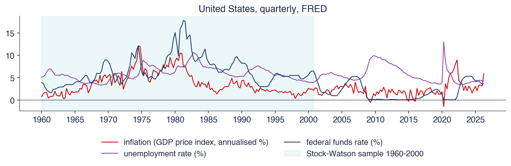
Trimestrial, T1 1960–T2 2026 (FRED); zona colorată: eșantionul din Stock și Watson (2001), 164 de trimestre
Graficul este grila 3 × 3 de răspunsuri la impuls ortogonalizate ale VAR(4) american pentru T1 1960 – T4 2000, un model cu 39 de coeficienți, pe 24 de trimestre. Ca în grila românească, fiecare rînd este o variabilă care răspunde, iar fiecare coloană un șoc de o abatere standard, cu ordinea Cholesky inflație, șomaj, dobînda federală; zonele colorate sînt benzi bootstrap de 90%.
Coloana din dreapta conține răspunsurile la un șoc al dobînzii federale, interpretat în această ordine ca șoc de politică monetară: o modificare neașteptată a dobînzii, date fiind inflația și șomajul curente. Rîndul de jos arată cum răspunde dobînda de politică monetară la celelalte șocuri, corespondentul empiric al unei funcții de reacție.
Pe scurt
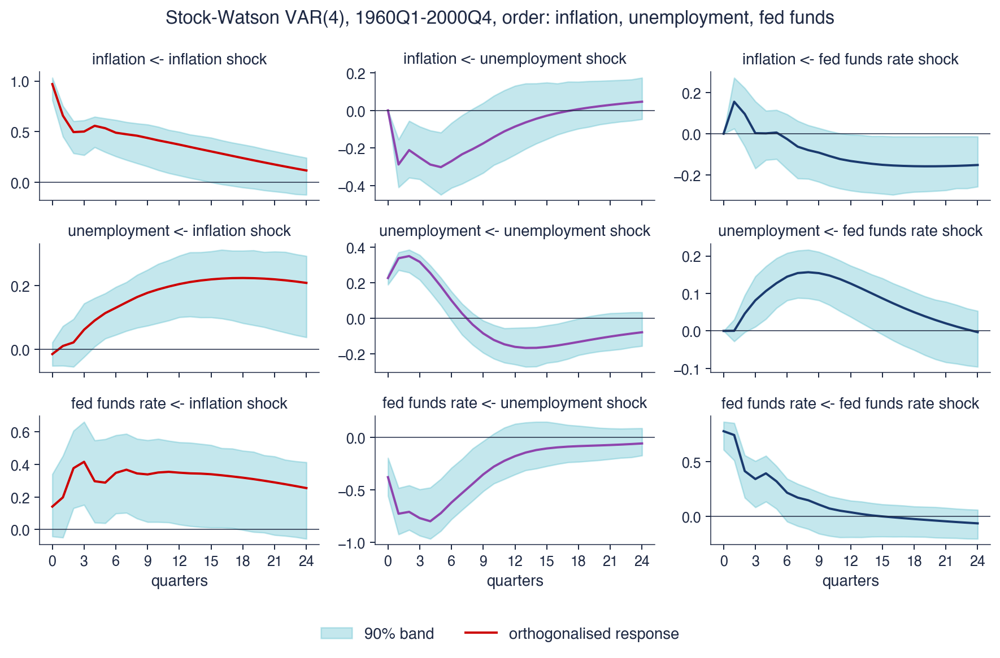
VAR(4), T1 1960–T4 2000, 39 de coeficienți; ordinea Cholesky inflație, șomaj, dobînda federală; 24 de trimestre; benzi bootstrap de 90%
Un șoc monetar, de +0,78 pp în dobînda federală, crește șomajul cu pînă la 0,16 pp după 8 trimestre. Inflația crește la început, cu 0,16 pp, o enigmă a prețurilor ca în VAR-ul românesc, apoi scade lent, pînă la −0,13 pp după 3 ani. Politica monetară acționează cu laguri lungi asupra economiei reale și cu laguri și mai lungi asupra prețurilor.
Testele Granger dau șomajul → inflația cu p = 0,036, inflația → dobînda federală și șomajul → dobînda federală cu p-value sub 0,001 și dobînda federală → inflația nesemnificativ, cu p = 0,402. FEVD după 12 trimestre atribuie șocurilor monetare 19% din varianța erorii de prognoză a șomajului și 2% din cea a inflației: șocurile de politică monetară explică o parte modestă a fluctuațiilor, care provin în majoritate din alte surse.
Pe eșantionul extins 1960 – T2 2026, cu \(T = 262\) de trimestre, răspunsul șomajului are semnul greșit în primele trimestre, −0,13 pp: șomajul scade după o înăsprire monetară. Dobînzile zero de după 2008 și pandemia schimbă sistemul, iar un model estimat peste ele amestecă regimuri în care dobînda se putea mișca și regimuri în care nu se putea. Rezultatele depind de eșantion.
Pe scurt
Un șoc monetar (\(+0{,}78\) pp în dobînda federală) crește șomajul cu pînă la 0,16 pp după 8 trimestre
inflația crește întîi (0,16 pp, o enigmă a prețurilor), apoi scade lent (\(-\)0,13 pp după 3 ani)
FEVD după 12 trimestre: șocurile monetare explică 19% din șomaj și 2% din inflație
Pe eșantionul extins 1960–T2 2026 (\(T = 262\)) răspunsul șomajului are semnul greșit în primele trimestre (\(-\)0,13 pp): dobînzile zero de după 2008 și pandemia schimbă sistemul
Băncile centrale folosesc VAR-uri pentru prognoze și pentru scenarii de politică, precum și modele derivate din ele: VAR-uri bayesiene, care trag mulțimea de coeficienți spre valori a priori simple și atenuează astfel blestemul dimensionalității, și modele DSGE (modele dinamice stochastice de echilibru general), a căror dinamică implicată este comparată cu cea a VAR-urilor. Fotografia îl arată pe Christopher Sims susținînd prelegerea Nobel la Stockholm, pe 8 decembrie 2011.
Enigma prețurilor din Sims (1992) a influențat literatura ulterioară. Pentru a o elimina, în VAR-urile monetare au fost adăugate prețurile materiilor prime și măsuri ale așteptărilor, astfel încît informația la care reacționează banca centrală să fie în model și să nu apară ca șoc de politică monetară.
Variabilele nestaționare care evoluează împreună pe termen lung cer forma cu corecția erorii a VAR-ului. Cointegrarea și modelul vectorial cu corecția erorii (VECM, vector error correction model) din Engle și Granger (1987) sînt subiectul Capitolului 7.
Într-un VAR structural, șocurile formei reduse sînt combinații de șocuri structurale, \(\bepsilon_t = \mathbf{B}_0^{-1}\mathbf{u}_t\), iar pentru identificarea lor sînt necesare \(K(K-1)/2\) restricții. Descompunerea Cholesky este cea mai simplă identificare, una recursivă.
În VAR-ul din Stock și Watson (2001), un șoc monetar crește șomajul, iar inflația reacționează lent. Rezultatele depind de eșantion și de identificare.
Cholesky este cea mai simplă identificare (recursivă)
Stock și Watson (2001): un șoc monetar crește șomajul; inflația reacționează lent
Rezultatele depind de eșantion și de identificare
Sinteza secțiunii
Trecerea de la forma redusă la șocuri structurale este locul în care ipotezele economice intră într-un VAR. VAR-ul Stock–Watson arată atît forța metodei, o descriere compactă a interacțiunii dintre producție, prețuri și dobînda de politică monetară, cît și fragilitatea ei, deoarece răspunsurile se schimbă odată cu eșantionul. Secțiunea următoare discută cum pot ajuta instrumentele AI într-o analiză VAR și ce trebuie verificat.
Contribuția posibilă a AI
O analiză VAR implică mulți pași de rutină, de la alinierea datelor la desenarea răspunsurilor, și cîteva capcane conceptuale. Această secțiune descrie unde ajută un asistent AI și ce verificări trebuie să urmeze rezultatului său.
Un asistent AI ajută în trei locuri. Poate schița codul unei analize VAR: descărcarea mai multor serii, alinierea datelor calendaristice, alegerea lui \(p\) și estimarea modelului. Poate da o a doua explicație a unui concept, cum ar fi descompunerea Cholesky sau citirea unui tabel FEVD. Și poate rula explorări la scară mare, cum ar fi teste Granger și indici de spillover pentru multe perechi de piețe sau de țări din UE deodată.
Promptul de pe slide cere un flux complet pentru VAR-ul românesc: creșterea PIB-ului din tabelul Eurostat namq_10_gdp, inflația anuală IAPC din prc_hicp_minr și ROBOR 3M din irt_st_m, alegerea ordinului după AIC, BIC și HQ, verificarea stabilității și a reziduurilor, teste Granger și răspunsuri la impuls ortogonalizate cu benzi bootstrap. Un prompt precis de acest fel numește sursele de date, transformările și diagnosticările, ceea ce face răspunsul mai ușor de verificat.
Pe scurt
Cod: o primă versiune a unui script care descarcă mai multe serii, le aliniază datele, alege \(p\) și estimează un VAR
Explicații: o a doua explicație a descompunerii Cholesky sau a unui tabel FEVD
Explorare: teste Granger și indici de spillover pentru multe perechi de piețe sau de țări din UE deodată
Exemplu de prompt
Write Python code that builds a quarterly data set for Romania (real GDP growth from Eurostat namq_10_gdp, 12-month HICP inflation from prc_hicp_minr, ROBOR 3M from irt_st_m), chooses the VAR lag order by AIC, BIC and HQ, checks stability and residuals, runs Granger tests and plots orthogonalised impulse responses with bootstrap bands.
Primele verificări privesc datele. Seriile trebuie aliniate pe aceleași trimestre, fără valori propagate înainte (forward fill) sau perioade suprapuse, care creează precedențe false: o serie lunară propagată înainte pentru a completa un trimestru lipsă pare să le preceadă pe celelalte. Fiecare variabilă trebuie testată pentru staționaritate, cu testele din Capitolul 3, înaintea oricărui test Granger; pentru variabile \(I(1)\), opțiunile sînt diferențele, abordarea Toda–Yamamoto sau un VECM.
Următoarele verificări privesc modelul. Stabilitatea trebuie verificată pe matricea companion, nu doar pe \(\bA_1\). Ordinea Cholesky folosită trebuie precizată și justificată, iar rezultatele principale trebuie comparate cu o altă ordine sau cu răspunsuri generalizate. Trebuie verificat și limbajul: „cauzează în sens Granger” nu trebuie raportat niciodată drept „cauzează”. În final, fiecare referință citată trebuie să existe, ceea ce se verifică prin DOI-ul ei.
Pe scurt
Datele calendaristice: serii aliniate pe aceleași trimestre, fără valori propagate înainte (forward fill) sau suprapuse, care creează precedențe false
Staționaritatea fiecărei variabile (Capitolul 3) înaintea testelor Granger; pentru variabile \(I(1)\): diferențe, Toda–Yamamoto sau un VECM
Stabilitatea din matricea companion, nu doar din \(\bA_1\)
Ordinea Cholesky folosită și justificarea ei; aceleași rezultate cu altă ordine sau cu răspunsuri generalizate
Că „cauzează în sens Granger” nu este raportat niciodată drept „cauzează”
Fiecare referință citată: trebuie să existe; verificați DOI-ul
Sinteza secțiunii
Asistenții AI scriu repede cod pentru VAR, dar erorile care contează, date nealiniate, rădăcini unitare netestate, o verificare a stabilității pe matricea greșită, o ordine neprecizată și limbajul cauzal, produc rezultate care par plauzibile. Verificările din această secțiune transformă schița într-o analiză care poate fi susținută.
Rezumat
Această secțiune adună ideile și formulele principale ale capitolului și propune trei întrebări de autoevaluare.
Un VAR(\(p\)) regresează fiecare variabilă pe trecutul tuturor variabilelor; se estimează prin OLS ecuație cu ecuație și se păstrează mic ca număr de variabile și de laguri. Este stabil cînd toate valorile proprii ale matricei companion se află în interiorul cercului unitate; un VAR stabil are o medie și o reprezentare de medie mobilă. Ordinul se alege cu AIC, BIC și HQ, iar reziduurile se verifică apoi cu testul portmanteau.
Cauzalitatea Granger înseamnă predictibilitate suplimentară, relativă la variabilele alese, nu cauză și efect. Răspunsurile la impuls și descompunerea varianței cer șocuri ortogonale, iar ordinea Cholesky este o ipoteză de identificare. Prognozele VAR trebuie să fie mai precise, în afara eșantionului, decît modelele AR și mersul aleator; adesea nu sînt.
Pe scurt
Un VAR\((p)\) regresează fiecare variabilă pe trecutul tuturor; OLS ecuație cu ecuație; puține variabile și laguri
Stabilitatea: toate valorile proprii ale matricei companion în interiorul cercului unitate; atunci există o medie și o formă de medie mobilă
Alegem \(p\) cu AIC, BIC, HQ, apoi verificăm reziduurile cu testul portmanteau
Cauzalitatea Granger = predictibilitate suplimentară, relativă la variabilele alese
IRF și FEVD cer șocuri ortogonale: ordinea Cholesky este o ipoteză de identificare
Prognozele VAR trebuie să fie mai precise, în afara eșantionului, decît modelele AR și mersul aleator; adesea nu sînt
Tabelul adună formulele capitolului. Primul rînd este modelul (6.2), cu covarianța șocurilor \(\bSigma\). Al doilea dă condiția de stabilitate, toate valorile proprii \(\lambda_i\) ale matricei companion \(\mathbf{F}\) în interiorul cercului unitate, și media unui VAR(\(p\)) stabil, generalizarea lui (6.3). Al treilea dă criteriile informaționale (6.6), cu \(c_T = 2\) pentru AIC, \(\ln T\) pentru BIC și \(2\ln\ln T\) pentru HQ.
Statistica portmanteau (6.7) se compară cu \(\chi^2(K^2(h - p))\), iar statistica \(F\) a testului Granger (6.8) cu \(F(p, T - Kp - 1)\). Matricele mediei mobile urmează recurența \(\bPhi_h = \sum_{j=1}^{\min(h,p)}\bA_j\bPhi_{h-j}\), răspunsurile ortogonalizate sînt \(\boldsymbol{\Theta}_h = \bPhi_h\mathbf{P}\) cu \(\bSigma = \mathbf{P}\mathbf{P}'\), ponderile FEVD sînt (6.11), iar covarianța erorii de prognoză este (6.13).
Prima întrebare cere să stabilim dacă VAR(1) cu matricea \(\bA\) cu rîndurile \((0{,}9;\ 0{,}3)\) și \((0{,}2;\ 0{,}8)\) este stabil. Urma este 1,7, iar determinantul \(0{,}72 - 0{,}06 = 0{,}66\), deci valorile proprii rezolvă \(\lambda^2 - 1{,}7\lambda + 0{,}66 = 0\), de unde \(\lambda = 1{,}1\) și \(0{,}6\). O valoare proprie depășește 1, deci VAR-ul nu este stabil, deși fiecare coeficient este sub 1.
A doua întrebare cere să stabilim dacă un test Granger cu p = 0,30 pentru \(x \to y\) arată că \(x\) nu are niciun efect asupra lui \(y\). Nu arată: lagurile lui \(x\) nu îmbunătățesc prognoza lui \(y\) în acest eșantion, dar rămîn posibile efecte în aceeași perioadă, efecte lente sau o putere mică a testului. A treia întrebare cere ponderea varianței erorii de prognoză la un pas a primei variabile dintr-o FEVD Cholesky care provine din propriul șoc: 100%, prin construcția ordinii.
Capitolul următor, Capitolul 7, studiază seriile nestaționare care evoluează împreună pe termen lung: cointegrarea și modelul vectorial cu corecția erorii (VECM).
Pe scurt
Întrebare: este stabil VAR(1) cu \(\bA = \begin{pmatrix} 0{,}9 & 0{,}3 \\ 0{,}2 & 0{,}8 \end{pmatrix}\)?
Răspuns: nu: \(\lambda^2 - 1{,}7\lambda + 0{,}66 = 0\) dă \(\lambda = 1{,}1\) și \(0{,}6\)
Întrebare: un test Granger dă p = 0,30 pentru \(x \to y\). Nu are \(x\) niciun efect asupra lui \(y\)?
Răspuns: nu putem concluziona asta: lagurile lui \(x\) nu îmbunătățesc prognoza; rămîn posibile efecte în aceeași perioadă, efecte lente sau o putere mică a testului
Întrebare: într-o FEVD Cholesky, ce pondere din varianța erorii la un pas a primei variabile provine din propriul șoc?
Răspuns: 100%, prin construcția ordinii
Urmează: Capitolul 7, cointegrarea și modelul vectorial cu corecția erorii (VECM)
Sinteza secțiunii
VAR-ul este modelul de bază pentru mai multe serii de timp observate împreună. Se estimează la fel de simplu ca o regresie, dar fiecare dintre utilizările lui, cauzalitatea Granger, răspunsurile la impuls, descompunerea varianței și prognozele, cere atenție: la setul de informații, la identificarea șocurilor și la o comparație corectă cu modele mai simple.
Akaike, H. (1974). A new look at the statistical model identification. IEEE Transactions on Automatic Control, 19(6), 716–723. doi:10.1109/TAC.1974.1100705
Diebold, F. X., & Mariano, R. S. (1995). Comparing predictive accuracy. Journal of Business & Economic Statistics, 13(3), 253–263. doi:10.1080/07350015.1995.10524599
Diebold, F. X., & Yilmaz, K. (2009). Measuring financial asset return and volatility spillovers, with application to global equity markets. The Economic Journal, 119(534), 158–171. doi:10.1111/j.1468-0297.2008.02208.x
Diebold, F. X., & Yilmaz, K. (2012). Better to give than to receive: Predictive directional measurement of volatility spillovers. International Journal of Forecasting, 28(1), 57–66. doi:10.1016/j.ijforecast.2011.02.006
Engle, R. F., & Granger, C. W. J. (1987). Co-integration and error correction: Representation, estimation, and testing. Econometrica, 55(2), 251–276. doi:10.2307/1913236
Granger, C. W. J. (1969). Investigating causal relations by econometric models and cross-spectral methods. Econometrica, 37(3), 424–438. doi:10.2307/1912791
Hamilton, J. D. (1994). Time Series Analysis. Princeton University Press. doi:10.2307/j.ctv14jx6sm
Hannan, E. J., & Quinn, B. G. (1979). The determination of the order of an autoregression. Journal of the Royal Statistical Society: Series B, 41(2), 190–195. doi:10.1111/j.2517-6161.1979.tb01072.x
Hosking, J. R. M. (1980). The multivariate portmanteau statistic. Journal of the American Statistical Association, 75(371), 602–608. doi:10.1080/01621459.1980.10477520
Huang, C., & Petukhina, A. (2022). Applied Time Series Analysis and Forecasting with Python. Springer. doi:10.1007/978-3-031-13584-2
Hyndman, R. J., & Athanasopoulos, G. (2021). Forecasting: Principles and Practice (3rd ed.), Section 12.3, Vector autoregressions. OTexts. otexts.com/fpp3/VAR.html
Jarque, C. M., & Bera, A. K. (1980). Efficient tests for normality, homoscedasticity and serial independence of regression residuals. Economics Letters, 6(3), 255–259. doi:10.1016/0165-1765(80)90024-5
Kilian, L. (1998). Small-sample confidence intervals for impulse response functions. Review of Economics and Statistics, 80(2), 218–230. doi:10.1162/003465398557465
Koop, G., Pesaran, M. H., & Potter, S. M. (1996). Impulse response analysis in nonlinear multivariate models. Journal of Econometrics, 74(1), 119–147. doi:10.1016/0304-4076(95)01753-4
Lütkepohl, H. (1982). Non-causality due to omitted variables. Journal of Econometrics, 19(2–3), 367–378. doi:10.1016/0304-4076(82)90011-2
Pesaran, M. H., & Shin, Y. (1998). Generalized impulse response analysis in linear multivariate models. Economics Letters, 58(1), 17–29. doi:10.1016/S0165-1765(97)00214-0
Schwarz, G. (1978). Estimating the dimension of a model. The Annals of Statistics, 6(2), 461–464. doi:10.1214/aos/1176344136
Sims, C. A. (1980). Macroeconomics and reality. Econometrica, 48(1), 1–48. doi:10.2307/1912017
Sims, C. A. (1992). Interpreting the macroeconomic time series facts: The effects of monetary policy. European Economic Review, 36(5), 975–1000. doi:10.1016/0014-2921(92)90041-T
Sims, C. A., Stock, J. H., & Watson, M. W. (1990). Inference in linear time series models with some unit roots. Econometrica, 58(1), 113–144. doi:10.2307/2938337
Stock, J. H., & Watson, M. W. (2001). Vector autoregressions. Journal of Economic Perspectives, 15(4), 101–115. doi:10.1257/jep.15.4.101
Toda, H. Y., & Yamamoto, T. (1995). Statistical inference in vector autoregressions with possibly integrated processes. Journal of Econometrics, 66(1–2), 225–250. doi:10.1016/0304-4076(94)01616-8
Bibliografie
Akaike, H. (1974). A new look at the statistical model identification. IEEE Transactions on Automatic Control, 19(6), 716–723. https://doi.org/10.1109/TAC.1974.1100705
Diebold, F. X., & Yilmaz, K. (2009). Measuring financial asset return and volatility spillovers, with application to global equity markets. The Economic Journal, 119(534), 158–171. https://doi.org/10.1111/j.1468-0297.2008.02208.x
Diebold, F. X., & Yilmaz, K. (2012). Better to give than to receive: Predictive directional measurement of volatility spillovers. International Journal of Forecasting, 28(1), 57–66. https://doi.org/10.1016/j.ijforecast.2011.02.006
Engle, R. F., & Granger, C. W. J. (1987). Co-integration and error correction: Representation, estimation, and testing. Econometrica, 55(2), 251–276. https://doi.org/10.2307/1913236
Granger, C. W. J. (1969). Investigating causal relations by econometric models and cross-spectral methods. Econometrica, 37(3), 424–438. https://doi.org/10.2307/1912791
Hannan, E. J., & Quinn, B. G. (1979). The determination of the order of an autoregression. Journal of the Royal Statistical Society: Series B, 41(2), 190–195. https://doi.org/10.1111/j.2517-6161.1979.tb01072.x
Hyndman, R. J., & Athanasopoulos, G. (2021). Forecasting: Principles and Practice (3rd ed.), Section 12.3, Vector autoregressions. OTexts. https://otexts.com/fpp3/VAR.html
Jarque, C. M., & Bera, A. K. (1980). Efficient tests for normality, homoscedasticity and serial independence of regression residuals. Economics Letters, 6(3), 255–259. https://doi.org/10.1016/0165-1765(80)90024-5
Kilian, L. (1998). Small-sample confidence intervals for impulse response functions. Review of Economics and Statistics, 80(2), 218–230. https://doi.org/10.1162/003465398557465
Koop, G., Pesaran, M. H., & Potter, S. M. (1996). Impulse response analysis in nonlinear multivariate models. Journal of Econometrics, 74(1), 119–147. https://doi.org/10.1016/0304-4076(95)01753-4
Pesaran, M. H., & Shin, Y. (1998). Generalized impulse response analysis in linear multivariate models. Economics Letters, 58(1), 17–29. https://doi.org/10.1016/S0165-1765(97)00214-0
Sims, C. A. (1992). Interpreting the macroeconomic time series facts: The effects of monetary policy. European Economic Review, 36(5), 975–1000. https://doi.org/10.1016/0014-2921(92)90041-T
Sims, C. A., Stock, J. H., & Watson, M. W. (1990). Inference in linear time series models with some unit roots. Econometrica, 58(1), 113–144. https://doi.org/10.2307/2938337
Stock, J. H., & Watson, M. W. (2001). Vector autoregressions. Journal of Economic Perspectives, 15(4), 101–115. https://doi.org/10.1257/jep.15.4.101
Toda, H. Y., & Yamamoto, T. (1995). Statistical inference in vector autoregressions with possibly integrated processes. Journal of Econometrics, 66(1–2), 225–250. https://doi.org/10.1016/0304-4076(94)01616-8